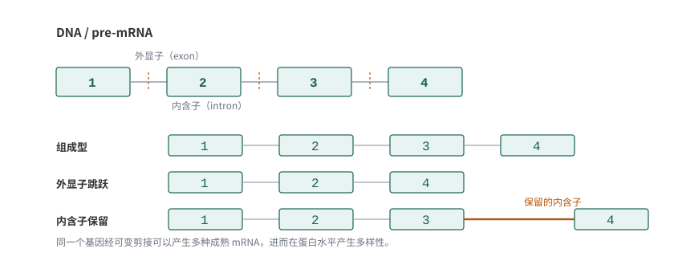
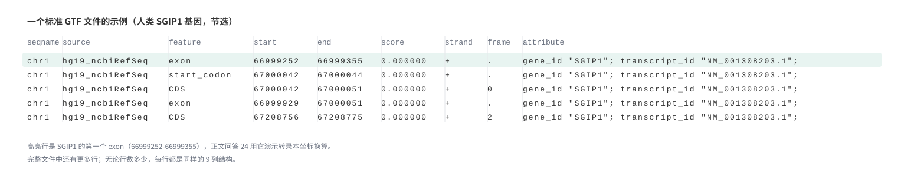

4 测序结果的比对
本章提要
本章从参考基因组、参考转录本和基因注释出发，理解序列为什么能够定位到参考资源，以及怎样选择合适的比对策略。我们会介绍双序列比对、mapping 和 BLAST 等概念，练习 SAM/BAM 的查看、转换、排序与过滤，再讨论测序深度、文库复杂度和 IGV 中的结果检查。最后从公共数据库获取数据，把参考资源与实际输入对应起来。学习的重点是理解文件、参数和处理结果之间的联系。
4.1 概览
经过上一章的质控，我们手上已经有了干净的测序数据（clean reads）。接下来自然要问：这些序列在基因组上究竟来自哪里？本章就沿着这条主线展开：先认识参考基因组与常用注释（它们是比对的“地图”），再学习序列比对的算法原理（双序列比对、BLAST、哈希表与 BWT），然后根据数据特点选择比对软件并实际操作，把结果保存成 SAM/BAM 文件，做排序、过滤与统计，用 IGV 目视检查，最后把公共数据库的数据下载下来作为练习输入。

如 图 4.1 所示，从 FASTQ 到 SAM 的每一步都有明确的输入和输出。把序列放到参考资源中理解，看清楚每一步“进去的是什么、出来的是什么”，是连接原始测序结果与后续分析的重要一步，也是本章反复强调的阅读方式。
4.2 参考基因组
选取相互兼容的参考资源并理解注释差异。
比对的第一件事不是选软件，而是确定比对的“地图”：参考基因组。它是一份由多家研究机构共同维护、尽可能准确和完整的物种 DNA 序列，以 FASTA 格式发布。我们在第 3 章见过 FASTA，这里要强调的是版本。
- 人类参考基因组最常用的两个版本是 GRCh37（UCSC 称为 hg19，2009 年发布）和 GRCh38（hg38，2013 年发布）；2022 年发布的 T2T-CHM13 进一步补全了末端的重复区域。版本越新不代表“更适合所有分析”——大量已有工具、注释和教程仍基于 GRCh37/hg19，本书的教学示例也使用 hg19。关键是全流程保持同一个版本：参考 FASTA、注释文件、软件索引必须来自同一版本，混用会导致坐标错位。
- 常用的下载来源有 UCSC Genome Browser、Ensembl 与 NCBI RefSeq。它们发布的序列基本一致，但染色体命名有细微差别（例如 Ensembl 用
1，UCSC 用chr1），注释的基因集合也不完全相同，后一小节会展开。 - 本书各链接均于 2026 年 10 月核对可访问。网站界面会随版本更新调整，按钮位置可能变化，但操作逻辑是一致的：进入官网，找到下载入口，选好物种与版本，再选格式（FASTA 或 GTF/GFF）。
构建参考基因组索引
获取到 clean reads 之后，需要将它们回贴（mapping）到基因组上；在此之前，我们要先为参考基因组建立一个索引。对于有参考基因组的分析，构建参考基因组索引是非常关键的一步。这一步在许多分析中操作类似：本章后文介绍 BWT 算法时会解释索引为什么能加速比对，后续 ChIP-Seq、WGS 分析中也会用到同样的操作。
RNA-Seq 分析中的参考资源包括基因组 DNA 序列（FASTA）和基因组注释文件（GTF/GFF），可以从 Ensembl、UCSC 等数据库获取，具体下载步骤见下一节。
构建参考基因组索引的软件
构建参考基因组索引的软件包括 BWA1、Bowtie2、Bowtie2、HISAT 和 HISAT2。
此外，BLASR（Basic Local Alignment with Successive Refinement）主要用于将 PacBio 测序的 reads 和参考序列进行匹配，这是一个处理三代测序的软件，用 sawriter 命令建库、blasr 进行序列比对。需要说明的是，这是较早时期（2012 年前后）的选择；如今三代序列比对的事实标准是 minimap2，PacBio 官方流程中的 pbmm2 也是基于它实现的。软件会更新换代，但“为参考序列建索引、再把长读段定位上去”的逻辑没有变。
本节内容待补充。
4.3 参考转录本与基因注释
GTF与GFF 文件
RNA-Seq 中一个很重要的注释文件就是 GTF 文件或者 GFF 文件。这类文件主要保存基因等特征（feature）在基因组上的坐标与属性信息，告诉我们哪里是外显子、哪里是编码区。
基因组注释文件有两种常见格式：GTF（Gene Transfer Format）和 GFF（General Feature Format）。这二者有何不同？其实 GFF 有若干个版本，GTF 正是 GFF 的其中一个版本，一般认为 GTF 文件就是 GFF 2.0 版本的内容。
这两者只是一些格式细节上的不同，包含的信息内容上完全可以等价，也有很多工具可以提供两种格式的互相转换。
一个标准的 GTF/GFF2.0 文件每行需要包括 9 列内容（完整规范见 Ensembl 的 GFF/GTF 格式说明，2026 年 10 月核对可访问）：
| 列 | 字段 | 含义 |
|---|---|---|
| 1 | seqname | 序列名，一般为染色体名，需要与 FASTA 中的名称一致 |
| 2 | source | 注释来源，如软件名、数据库名，没有则用 . 表示 |
| 3 | feature | 特征类型，包括 gene、mRNA、exon、CDS 等 |
| 4 | start | 起始坐标位点（1-based，包含端点） |
| 5 | end | 终止坐标位点（1-based，包含端点） |
| 6 | score | 得分，表示该条注释可信度的打分，没有则用 . 表示 |
| 7 | strand | 正负链：+ 表示正链，- 表示负链 |
| 8 | frame | 读码框。当 feature 为 CDS、start_codon、stop_codon 时取 0、1、2：0 表示该特征的第 1 个碱基正是密码子的第 1 个碱基，1 表示要跳过 1 个碱基才到下一个密码子的第 1 位，2 表示跳过 2 个碱基。其他 feature 用 . 表示 |
| 9 | attribute | 属性，格式为 tag=value，多个属性之间以分号分隔 |
坐标的起点与区间边界
把一种文件里的区间拿到另一种工具中使用之前，要同时核对参考版本、染色体名称、坐标起点和区间边界，这四件事只要有一件对不上，同一串数字代表的就不是同一段序列。
SAM 文本中的 POS 从 1 开始计数，并且区间两端都包含；BED 通常使用从 0 开始、右端不包含（half-open）的区间。因此 BED 的 99 与 GTF 的 100 可能指同一个碱基。相同的数字不一定表示同一段序列。
以一条染色体上第 100 到第 108 个碱基的区段为例，两种体系的写法对比见 表 4.2 。
| 坐标体系 | 起点 | 终点 | 区段宽度 |
|---|---|---|---|
| GTF/GFF、SAM（1-based，双端包含） | 100 | 108 | 9 |
| BED（0-based，右端不包含） | 99 | 108 | 9 |
系统示例与转换练习待补充。规范来源：SAM/BAM 格式规范。
知识问答 24：GTF/GFF 与基因注释
问题描述
在转录组分析的过程中，往往需要基因注释文件，通常是 GFF 或者是 GTF 文件。这两个文件的内容是什么？有什么特点？这是本节要探索的问题。
1. 我们为什么需要基因注释文件？

我们的基因在基因组上的结构不是连续的，而是被 exon-intron-exon（exon=外显子，intron=内含子）分隔开的（ 图 4.2 ）。基因要表达，首先会先发生转录过程，转录出包含 intron 的 pre-mRNA 序列，然后再进行可变剪接，加 5’ 帽子、3’ PolyA 尾巴等一系列复杂的加工过程才会形成成熟的 mRNA。
在进行转录组序列比对，尤其是 mRNA 序列比对的时候，经常需要处理跨越两个 exon 之间的 reads，所以在进行序列比对的时候往往需要对基因组有一个注释，告诉比对软件哪个位置是 gene 的 exon，哪个地方是 gene 的 intron，这个就是我们所说的基因注释信息。所以，它的核心内容就是一大堆 gene 在基因组上的坐标，以及这个 gene 本身的一些属性。
2. GTF与GFF都是基因注释文件
GTF = Gene Transfer Format，GFF = General Feature Format。
GFF 有若干个版本，简单来说，GTF 是 GFF 文件的其中一个版本，我们一般认为 GTF 文件就是 GFF 2.0 版本的内容。一个标准的 GTF/GFF2.0 文件需要包括 9 列内容，各列含义见前文的 表 4.1 ，一个真实文件的示意见 图 4.3 。

结合真实文件，再补充几个使用上的细节：
- 所有列必须用 TAB 分隔，总共有 9 列内容，第 9 列是补充列；第 9 列的内容可以为空，但是前面 8 列必须有内容，如果想表达空的概念，则需要用
.。 - 第 1 列 seqname 是染色体的名称，需要与 genome FASTA 文件中的染色体名对应，别一个用
chr1一个用Chr1。 - 第 2 列 source 表示注释来自哪里，比如 图 4.3 中表示来自 NCBI RefSeq 数据库。
- 第 3 列 feature 是此行的注释类型，一般有 exon、CDS、stop_codon、start_codon 等等。
- 第 4、5 列 start、end 是此行注释的起始和终止位置，都以 1 为起点（1-based system）；注意无论这个 gene 在正链还是负链，start 的坐标都小于 end 坐标。
- 第 9 列 attribute 一般会记录 gene_id 与 transcript_id；在程序处理过程中，相同的 attribute 会合并在一起处理，比如所有 gene_id 为 SGIP1 的行会先汇总在一起，表示 1 个基因。
3.提出问题
我们先思考 2 个小问题，1 个比较偏理论，1 个比较具体。
- 你认为 GTF/GFF 的文件格式设计合理吗？为什么？
并不是非常合理。这种格式虽然包括了注释需要的全部信息，但是同一个基因的不同 elements 并不在同一行，在统计一个基因包含哪些元件时需要用循环一行一行去判断该 element 是否同属一个基因，比较耗费 CPU 和内存。如果不选择 GTF 文件，而是选择 图 4.4 所示的“all files from selected table”文件，这种文件的注释信息以一个基因为一行，包括了这一个基因的各个 elements，处理起来更加便捷。

all files from selected table 文件内容示例：
#bin name chrom strand txStart txEnd cdsStart cdsEnd exonCount exonStarts exonEnds score name2 cdsStartStat cdsEndStat exonFrames
1251 NM_004261.4 chr1 - 87328127 87380048 87329156 87379794 5 87328127,87333735,87346344,87368963,87379710, 87329288,87333785,87346408,87369131,87380048, 0 SELENOF cmpl cmpl 0,1,0,0,0,#bin name chrom strand txStart txEnd cdsStart cdsEnd exonCount exonStarts exonEnds score name2 cdsStartStat cdsEndStat exonFrames
1251 NM_004261.4 chr1 - 87328127 87380048 87329156 87379794 5 87328127,87333735,87346344,87368963,87379710, 87329288,87333785,87346408,87369131,87380048, 0 SELENOF cmpl cmpl 0,1,0,0,0,- 如果告知，transcript_id 为 NM_001308203.1，gene_id 为 SGIP1，在转录本上的坐标为 101，那么对应基因组的坐标是多少？请写出答案与简要程序思路。注释信息如下：
chr1 hg19_ncbiRefSeq exon 66999252 66999355 0.000000 + . gene_id "SGIP1"; transcript_id "NM_001308203.1";
chr1 hg19_ncbiRefSeq start_codon 67000042 67000044 0.000000 + . gene_id "SGIP1"; transcript_id "NM_001308203.1";
chr1 hg19_ncbiRefSeq CDS 67000042 67000051 0.000000 + 0 gene_id "SGIP1"; transcript_id "NM_001308203.1";
chr1 hg19_ncbiRefSeq exon 66999929 67000051 0.000000 + . gene_id "SGIP1"; transcript_id "NM_001308203.1";
chr1 hg19_ncbiRefSeq CDS 67091530 67091593 0.000000 + 2 gene_id "SGIP1"; transcript_id "NM_001308203.1";
chr1 hg19_ncbiRefSeq exon 67091530 67091593 0.000000 + . gene_id "SGIP1"; transcript_id "NM_001308203.1";
chr1 hg19_ncbiRefSeq CDS 67098753 67098777 0.000000 + 1 gene_id "SGIP1"; transcript_id "NM_001308203.1";
chr1 hg19_ncbiRefSeq exon 67098753 67098777 0.000000 + . gene_id "SGIP1"; transcript_id "NM_001308203.1";
chr1 hg19_ncbiRefSeq CDS 67105460 67105516 0.000000 + 0 gene_id "SGIP1"; transcript_id "NM_001308203.1";
chr1 hg19_ncbiRefSeq exon 67105460 67105516 0.000000 + . gene_id "SGIP1"; transcript_id "NM_001308203.1";
chr1 hg19_ncbiRefSeq CDS 67108493 67108547 0.000000 + 0 gene_id "SGIP1"; transcript_id "NM_001308203.1";
chr1 hg19_ncbiRefSeq exon 67108493 67108547 0.000000 + . gene_id "SGIP1"; transcript_id "NM_001308203.1";
chr1 hg19_ncbiRefSeq CDS 67109227 67109402 0.000000 + 2 gene_id "SGIP1"; transcript_id "NM_001308203.1";
chr1 hg19_ncbiRefSeq exon 67109227 67109402 0.000000 + . gene_id "SGIP1"; transcript_id "NM_001308203.1";
chr1 hg19_ncbiRefSeq CDS 67136678 67136702 0.000000 + 0 gene_id "SGIP1"; transcript_id "NM_001308203.1";
chr1 hg19_ncbiRefSeq exon 67136678 67136702 0.000000 + . gene_id "SGIP1"; transcript_id "NM_001308203.1";
chr1 hg19_ncbiRefSeq CDS 67137627 67137678 0.000000 + 2 gene_id "SGIP1"; transcript_id "NM_001308203.1";
chr1 hg19_ncbiRefSeq exon 67137627 67137678 0.000000 + . gene_id "SGIP1"; transcript_id "NM_001308203.1";
chr1 hg19_ncbiRefSeq CDS 67138964 67139049 0.000000 + 1 gene_id "SGIP1"; transcript_id "NM_001308203.1";
chr1 hg19_ncbiRefSeq exon 67138964 67139049 0.000000 + . gene_id "SGIP1"; transcript_id "NM_001308203.1";
chr1 hg19_ncbiRefSeq CDS 67142687 67142779 0.000000 + 2 gene_id "SGIP1"; transcript_id "NM_001308203.1";
chr1 hg19_ncbiRefSeq exon 67142687 67142779 0.000000 + . gene_id "SGIP1"; transcript_id "NM_001308203.1";
chr1 hg19_ncbiRefSeq CDS 67145361 67145435 0.000000 + 2 gene_id "SGIP1"; transcript_id "NM_001308203.1";
chr1 hg19_ncbiRefSeq exon 67145361 67145435 0.000000 + . gene_id "SGIP1"; transcript_id "NM_001308203.1";
chr1 hg19_ncbiRefSeq CDS 67154831 67154958 0.000000 + 2 gene_id "SGIP1"; transcript_id "NM_001308203.1";
chr1 hg19_ncbiRefSeq exon 67154831 67154958 0.000000 + . gene_id "SGIP1"; transcript_id "NM_001308203.1";
chr1 hg19_ncbiRefSeq CDS 67155873 67155999 0.000000 + 0 gene_id "SGIP1"; transcript_id "NM_001308203.1";
chr1 hg19_ncbiRefSeq exon 67155873 67155999 0.000000 + . gene_id "SGIP1"; transcript_id "NM_001308203.1";
chr1 hg19_ncbiRefSeq CDS 67160122 67160187 0.000000 + 2 gene_id "SGIP1"; transcript_id "NM_001308203.1";
chr1 hg19_ncbiRefSeq exon 67160122 67160187 0.000000 + . gene_id "SGIP1"; transcript_id "NM_001308203.1";
chr1 hg19_ncbiRefSeq CDS 67184977 67185088 0.000000 + 2 gene_id "SGIP1"; transcript_id "NM_001308203.1";
chr1 hg19_ncbiRefSeq exon 67184977 67185088 0.000000 + . gene_id "SGIP1"; transcript_id "NM_001308203.1";
chr1 hg19_ncbiRefSeq CDS 67194947 67195102 0.000000 + 1 gene_id "SGIP1"; transcript_id "NM_001308203.1";
chr1 hg19_ncbiRefSeq exon 67194947 67195102 0.000000 + . gene_id "SGIP1"; transcript_id "NM_001308203.1";
chr1 hg19_ncbiRefSeq CDS 67199431 67199563 0.000000 + 1 gene_id "SGIP1"; transcript_id "NM_001308203.1";
chr1 hg19_ncbiRefSeq exon 67199431 67199563 0.000000 + . gene_id "SGIP1"; transcript_id "NM_001308203.1";
chr1 hg19_ncbiRefSeq CDS 67205018 67205220 0.000000 + 0 gene_id "SGIP1"; transcript_id "NM_001308203.1";
chr1 hg19_ncbiRefSeq exon 67205018 67205220 0.000000 + . gene_id "SGIP1"; transcript_id "NM_001308203.1";
chr1 hg19_ncbiRefSeq CDS 67206341 67206405 0.000000 + 1 gene_id "SGIP1"; transcript_id "NM_001308203.1";
chr1 hg19_ncbiRefSeq exon 67206341 67206405 0.000000 + . gene_id "SGIP1"; transcript_id "NM_001308203.1";
chr1 hg19_ncbiRefSeq CDS 67206955 67207119 0.000000 + 2 gene_id "SGIP1"; transcript_id "NM_001308203.1";
chr1 hg19_ncbiRefSeq exon 67206955 67207119 0.000000 + . gene_id "SGIP1"; transcript_id "NM_001308203.1";
chr1 hg19_ncbiRefSeq CDS 67208756 67208775 0.000000 + 2 gene_id "SGIP1"; transcript_id "NM_001308203.1";
chr1 hg19_ncbiRefSeq stop_codon 67208776 67208778 0.000000 + . gene_id "SGIP1"; transcript_id "NM_001308203.1";
chr1 hg19_ncbiRefSeq exon 67208756 67216822 0.000000 + . gene_id "SGIP1"; transcript_id "NM_001308203.1";判断的思路是根据注释信息计算 chr1 上该基因各 exon 的分布与长度，转录本上的坐标值代表了该位置之前各 exon 的累计长度。以该题为例，chr1 上该基因第一个 exon 的坐标是 66999252 到 66999355，长度是 66999355-66999252+1=104；转录本坐标是 101，不超过第一个 exon 的长度 104，说明该片段就落在这个 exon 上，对应的基因组坐标是 66999252+101-1=66999352。
:::
知识问答 25：参考转录本与注释资源
问题描述
上一问回答了 GTF/GFF 文件是什么，这一问接着回答：GTF/GFF 文件是怎么来的，从哪里能够下载。
先回顾一下：GTF 是 GFF 的 2.0 版本（以后我们把这两者统称为 GTF 文件），主要记录基因组上基因的结构，包括哪里是 exon，哪里是 intron，哪里是 CDS，哪里是 start codon，哪里是 stop codon。
1. 什么是参考GTF/GFF文件
针对一些已经通过测序计划拼装好基因组序列信息的物种，一般会同时提供其转录组的注释信息，也就是我们所说的 GTF/GFF 文件。常用的模式生物，比如 human（人）、mouse（小鼠）、rat（大鼠）、chicken（鸡）、lizard（蜥蜴）、Arabidopsis thaliana（拟南芥）等等，都已经有非常好的全基因组参考序列（FASTA 文件）以及转录组注释信息（GTF 或 GFF 文件）。因此，直接到能够提供下载地址的网站上下载就好了。 图 4.5 给大家展示了已经公布参考基因组的哺乳动物的系统发生树，大家可以看看人类和哪种动物演化距离最近。

多说一句，下载下来的 FASTA 文件就是我们所说的参考基因组，需要用这个文件去构建 mapping 的 index；下载下来的 GTF 文件是转录组注释信息，一般在计算表达量的时候需要提供。
2.什么是拼装转录本
在进行转录组分析的过程中，我们经常会听到一句话叫“用XX软件拼装转录本”，这句话是什么意思呢？不都有参考转录组了，还要拼个啥转录组？
第1个方面，对于无参考基因组、无参考转录组的物种来说，往往需要通过 RNA-Seq 的数据自己拼出参考转录组，然后再进行下游的数据分析。所以，对于无参分析来说，往往需要自己拼装转录本，生成自己的参考转录组信息，也包括注释信息（GTF 文件）。
第2个方面，对于注释非常好的基因组，例如 human 来说，不同细胞系的转录组、基因组或多或少存在结构变异和转录本差异。举个例子，有一个 geneA，在参考转录组中注释的是从 chr1:1000~15000 进行转录，但是在另外的细胞系中有可能就是从 chr1:980~15050 进行转录，这种转录起始和终点的不同是很常见的现象。因此，有时候为了更严谨地进行下游分析，需要根据已知的参考转录组以及测序数据对其进行修正，常用的软件有 StringTie 等（cufflinks 是更早期的工具，现在已较少使用）。
不过，对于有参考转录组的物种，一般情况下建议不要去自己拼转录本，也不要去做所谓的修正，意义不大，除非你研究的体系非常特殊。
3. 从哪里下载参考转录组GTF/GFF文件呢？
关于下载 GTF/GFF 文件，给大家介绍 2 个最常用的网站：一个是 UCSC Genome Browser（https://genome.ucsc.edu），另一个是 Ensembl（https://www.ensembl.org）。注意植物要使用 Ensembl 的专门站点 Ensembl Plants（https://plants.ensembl.org），动物、真菌等其他物种在主站下载。
小提示：以下操作截图摄于 2018 年前后（本书资料整理时期），2026 年 10 月核对各网站与链接仍可访问。网站界面会随版本更新调整，按钮位置可能变化，但操作逻辑是一致的：进入网站，找到数据入口，选好物种与版本，再选择注释格式下载。
3.1 从UCSC genome browser下载human的GTF文件
- 打开 UCSC Genome Browser 网站（ 图 4.6 ）。
- 在 Tools 里选择 Table Browser（ 图 4.7 ）。
- 打开 Table Browser 以后，设置需要的内容（ 图 4.8 ）：clade 选 Mammal，genome 选 Human，assembly 选 hg19，track 选 RefSeq Genes。hg19 = human genome 19，是常用的 human 参考基因组版本号；RefSeq Genes 是 NCBI RefSeq 维护、经过一定程度人工审核的基因注释。
- 点击 get output 即可下载。


3.2 Ensembl下载human的GTF文件
在下载之前必须跟大家提个醒：
- 动物相关的信息访问 Ensembl 主站：https://www.ensembl.org
- 植物相关的信息访问 Ensembl 植物站：https://plants.ensembl.org
我们在这里还是以下载 human hg19 版本的 GTF 文件为例，操作步骤如下：
- 登录 Ensembl 网站，并跳转到 hg19 版本界面（ 图 4.9 ）。
- 继续选择跳转到 hg19 版本界面（ 图 4.10 ）。
- 在 hg19 版本的 Ensembl 界面中选择 download（ 图 4.11 ）。
- 在 download 页面中选择 Download a sequence or region（ 图 4.12 ）。
- 在左边栏选择 FTP download，然后选择下载 GTF 文件（ 图 4.12 ）。
- 选择注释好的 GTF 进行下载（ 图 4.13 ）。


4. 提问环节
1. 请按照文中教程分别从UCSC Genome Browser，以及Ensembl网站上下载hg19的转录组注释的GTF格式文件。
下载的文件及压缩文件大小如下：

2. 下载这两个文件解压缩以后的大小是否有差异，差异大不大？
两个网站下载的 GTF 文件大小差异较大，解压之后 hg19_RefSeq_GTF_UCSC 文件约 126M，Homo_sapiens.GRCh37.87.chr.gtf 文件约 1.2G。
3. 解压并使用Linux less命令打开这两个文件，观察这两个文件的transcript_id以及gene_id是否相同，再找找看有哪些其他地方的不同。
两个文件的 transcript_id 以及 gene_id 均不相同。Ensembl 网站下载的 GTF 文件中，transcript_id 以 ENST 开头、gene_id 以 ENSG 开头，全称分别是 Ensembl Transcript ID 和 Ensembl Gene ID；而 UCSC 网站下载的 GTF 文件两者均以 NM 开头（RefSeq mRNA accession）。除此之外，UCSC 的注释信息非常简练，而 Ensembl 网站中的 GTF 文件注释信息相比于 UCSC 更加全面，但也存在冗余。NCBI RefSeq 的基因注释经过人工审核的比例更大，所以在使用策略上可以选择先使用 UCSC 的 GTF 文件筛选目标基因，再利用 Ensembl 的 GTF 文件找到更加详细的注释。
Ensembl GTF 文件示例：
1 havana exon 12613 12721 . + . gene_id "ENSG00000223972"; gene_version "4"; transcript_id "ENST00000456328"; transcript_version "2"; exon_number "2"; gene_name "DDX11L1"; gene_source "ensembl_havana"; gene_biotype "pseudogene"; transcript_name "DDX11L1-002"; transcript_source "havana"; transcript_biotype "processed_transcript"; havana_transcript "OTTHUMT00000362751"; havana_transcript_version "1"; exon_id "ENSE00003582793"; exon_version "1"; tag "basic";UCSC GTF 文件示例：
chr1 hg19_ncbiRefSeq exon 66999929 67000051 0.000000 + . gene_id "NM_001308203.1"; transcript_id "NM_001308203.1";4.4 序列比对算法
理解速度、灵敏度与唯一定位之间的权衡。
常用比对方法概述
从双序列比对说起
双序列比对是一切比对问题的基础。所谓的序列比对就是找到两条序列最佳的匹配方式。
比对其实应该对应的单词是alignment，但往往特指低通量的序列之间的比较。比如10条序列，进行多序列比对就是我们常说的 multiple alignment问题；如果是2条序列的比对，我们经常称其为pairwise alignment.
回贴通常对应的单词应该是mapping，一般指高通量的数据去寻找基因组的位置。比如我们进行测序以后，有10M对read pair，要去寻找他们在基因组上的位置，这个时候就是一个典型的mapping问题。
alignment与mapping其实是密切相关的概念，所有的mapping软件其实都是从低通量的办法逐步改进而得到的。
其实双序列比对（pairwise alignment）的相关算法，主要是Needleman-Wunsch算法（全局比对）和Smith-Waterman算法（局部比对）。
使用BLAST对单条序列进行搜索
当我们在鉴定一些未知名物种的时候，常规的分子生物学操作通常是：提取物种DNA，而后使用通用引物进行pcr扩增，送去公司进行sanger测序，序列结果返回后，通过NCBI进行检索，从而获取分子层面的物种鉴定。
在检索的过程中，我们选择的通常是一整个数据库进行比对，面对上亿的序列信息，如何在极短的时间内完成整个检索并反馈给用户，采用1对1的比对显然是不现实的，故而NCBI采用了一种启发式的序列检索工具 Basic Local Alignment Search Tool，简称 BLAST。
BLAST的基本原理就是先对数据库所有序列建立index，在输入序列后，对序列分割成若干段，而后通过快速检索与打分，最后反馈给用户。
知识问答 13：双序列比对
问题描述
双序列比对的经典算法是 Needleman-Wunsch（全局比对）和 Smith-Waterman（局部比对）。这里推荐结合北京大学高歌老师《生物信息学：导论与方法》的课程视频学习（以下链接 2026 年 10 月核对可访问）：
每个视频长度都不长，希望大家认真看完：这部分内容是以后各种比对问题的共同基础。
假设比对的 scoring matrix 如 图 4.15 所示（match +5，mismatch -4），同时 gap 的罚分 \(d=-5\)（每个空位扣 5 分）。

假设我们的 seq1 = AAGT，seq2 = AGCT；那么我们进行双序列比对，需要填写 图 4.16 的动态规划表格。
参考解答
1. 使用Needleman-Wunsch算法（全局比对），那么表1应该怎么填写？最终的比对结果是什么？
填表过程见 图 4.17 ：从左上角出发逐格计算，每格取“对角线+匹配得分、上方-空位罚分、左方-空位罚分”三者最大值，右下角的值就是全局比对最优得分。

最终的比对结果（本例并列两个，得分都是 5）：
A A G - T A A G - T
- A G C T A - G C T2. 使用Smith-Waterman算法（局部比对），那么表1应该怎么填写？最终的比对结果是什么？
填表过程见 图 4.18 ：与全局比对的差别是第 0 行第 0 列全为 0，并且每个格子计算后如果为负就记 0。

注意：局部比对的回溯是从矩阵中得分最高的单元格开始，沿箭头回溯，遇到 0 就停止。本题中最高分是 10，有两个并列的最优局部比对：
A G A G - T
A G A G C T第 1 个结果是 G 与 G 的匹配沿对角线回溯到 0；第 2 个结果从 T 与 T 的匹配出发，回溯途中经过一个空位。两种结果都只包含序列中最相似的局部，这正是局部比对的本意。若从“第一个非零的格子”开始回溯，得到的是次优结果，这是初学时常见的错误。
3. 请思考，为什么有的时候需要全局比对，有的时候需要局部比对？
全局比对是从头到尾对序列的每一个碱基都进行比对，找到两条序列整体的最优解；局部比对是为了找到两条序列中最相似的部分，最优结果可以有多个。
全局比对能找到两条序列比对的最优解，用处很大自不必说，这里单独说说局部比对的意义与必要性。随着越来越多的序列信息产生，人们发现：
- 某些蛋白序列虽然整体相差很大，但对某些特殊的功能域却有着极高的相似性；
- 这些功能域在不同物种中序列和功能都相当保守，这在全局比对中是很难发现的；
- 另一方面，随着 70 年代内含子的发现，比对算法必须要能够处理由内含子导致的大片段差异。
知识问答 14：BLAST 序列搜索
问题描述
第 13 问学习的是 pairwise alignment 的两种算法，全局比对与局部比对。这里先不展开多序列比对（multiple alignment）的算法：其思路大多是把多序列比对分解成若干个双序列比对，再做结果整合。本问要思考的问题是：为什么要开发 BLAST 算法？
无论全局还是局部比对，得到的都是 2 条序列比对的最优解（最优解可能有多个）。那所有比对问题都能用这种算法解决吗？我们来算这么 1 笔账，见 图 4.19 。

假设我有 1 条序列 SeqA = 100bp（这个不是很长），想找到它的相似序列。以 2017 年前后的 NCBI 非冗余核酸库（nt）为参照，当时库里有约 47,193,206 条序列，平均长度按 0.1Mbp 计。如果用局部比对算法逐条精确比较，至少需要 100bp × 0.1Mbp × 47,193,206 ≈ 4.7 × 10^14 次运算；按单核每秒约 3×10^9 次、20 个核心计算：
完成任务大约需要的时间 = 471930 × 10^9 ÷ 3 × 10^9 ÷ 20 ≈ 7860 秒，大约 130 分钟；
如果 SeqA = 1000bp，时间就变成约 1300 分钟。为了找一个相似性要花两个小时，显然不划算。于是有了 BLAST（Basic Local Alignment Search Tool），通过启发式策略把这类任务的运行时间缩短到了 1 分钟以内。
配合本问可以观看北京大学《生物信息学：导论与方法》课程中 BLAST 算法初探 一集（2026 年 10 月核对标题与链接对应）。看完视频后回答下面的问题：
1. BLAST提高搜索速度的核心算法的名称是什么？
BLAST 采用的是启发式算法：先把查询序列切分成短的种子序列（word），用种子在数据库中快速定位候选区域，再只对候选区域做局部比对延伸（seed-and-extend），从而避免对全库做精确的动态规划。
2. BLAST结果中E-value是什么意思？
在 BLAST 结果中，每一条匹配序列都会有匹配的 score 值（S 值）和 E 值：
- S 值（bit score）表示两条序列比对的相似程度，与打分系统和序列长度有关，分值越高越相似，没有上限；结果中的 Identities 百分比才最高是 100%。
- E 值是可靠性的评价，表示在随机情况下出现这种相似度的序列条数期望。E 值越小越好，注意 E 值有可能大于 1。
3. 如果想要降低BLAST的假阳性，你通常需要做什么？
- Word size 的选择：BLAST 将查询序列分割成一系列固定长度的小序列进行数据库搜索，此值越小得到的搜索结果越多，假阳性也就越多。
- 根据序列长度调整 E 值：检索序列较短时可适当提高 E 值（短序列随机命中更容易得到低 E 值），反之可降低 E 值。
- 空位罚分的选择：严谨的罚分会让相似度高的序列错过，而松弛的罚分会使检索结果过多。
- 序列检索前将低复杂度的序列先去除，尤其是 DNA 序列中的重复片段。
4. 假设给你一条序列，运行结果中序列相似度最高的来自于哪个物种？
>Protein Sequence
MVRAPCCEKMGLKKGPWTPEEDQILISYIQSNGHG
NWRALPKLAGLLRCGKSCRLRWTNYLRPDIKRGNF
TREEEDSIIQLHEMLGNRWSAIAARLPGRTDNEIK
NVWHTHLKKRLKNYQPPQSSKRHSKNKDSKAPCTS
QIALKSSNNFSNIKEDGPGLGSGPNSPQLSSSEMS
TVTADSLAVTMDISNSNDQIDSSENFIPEIDESFW
TDGLSTSGGGEELQVQFPFHDMKQENVEKDVGAKL
EDDMDFWYSVFIKSGDLLELPEF 使用网站与参数设置：
- BLAST：https://blast.ncbi.nlm.nih.gov（2026 年 10 月核对可访问）
- Database: Non-redundant protein sequences (nr)
- Algorithm: blastp
- Word size: 3
- Matrix: BLOSUM62
- Gap Costs: Existence: 11 Extension: 1
- 其他参数默认
运行结果：

由图中结果可知，序列相似度最高的物种是 Solanum lycopersicum（番茄）。
知识问答 15：BLAT 与快速定位
问题描述
这是低通量比对的最后一个问题，来为大家介绍 BLAT。
第一次看到 BLAT 这个名字，你可能会疑惑：不是 BLAST 吗？怎么少了个 S？
- BLAST = Basic Local Alignment Search Tool
- BLAT = BLAST-like alignment tool
从名字就能看出两者的分工。BLAST 是为了寻找 1 条 SeqA 的相似序列：一般输入 1 条 FASTA 序列，检索的数据库是所有常见生物（包括微生物在内）的非冗余数据库，特点是能找到所有已知生物的相似序列。优点是全，缺点是有时输出冗余——比如我只想在某一个物种的基因组上快速定位，BLAST 却把所有物种的相似序列都找了出来，从时间和输出冗余程度来说都不是最优解。所以 BLAT 应运而生。
BLAT 的功能，简单来说就是：我有 1 条序列 SeqA，想知道它在某一种基因组（比如 human genome）上的定位。
在线 BLAT 工具地址是 https://genome.ucsc.edu/cgi-bin/hgBlat，也可以通过 UCSC Genome Browser 的 Tools 菜单打开 BLAT（2026 年 10 月核对可访问）。

点开 BLAT 以后的页面如下：

第 1 行是你要选择的基因组参数，比如我们这里常用的就是人的参考基因组 hg19 版本。下面的白框用来输入序列，用标准的 FASTA 格式就行，之后点 submit 就大功告成。
参考解答
这个问题比较具体，来自一次实际的数据分析。
假设我们有 1 个小 RNA 的测序结果，这些 RNA 的平均长度小于 200bp；比对到小 RNA 序列库的时候，发现一个奇怪的现象：有 2 条 miRNA 的序列 mapping 到了非常多的 reads，而剩下的 1800 种 miRNA 总共才 mapping 到 10000 条 reads。具体数目如下：
hsa-mir-7641-2 2000000
hsa-mir-7641-1 50000通过 miRBase 检索，得到两条序列如下：
>hsa-mir-7641-2
GUUUGAUCUCGGAAGCUAAGCAGGGUCGGGCCUGGUUAGUACUUGGAUGGGAG
>hsa-mir-7641-1
UCUCGUUUGAUCUCGGAAGCUAAGCAGGGUUGGGCCUGGUUAGUACUUGGAUGGGAAACUU请尝试使用 BLAT、双序列比对（pairwise alignment，可用 EMBL-EBI 的 EMBOSS Water 工具，2026 年 10 月核对可访问）等工具探索并解释原因。
首先通过 BLAT 检索看这两条序列分别定位在染色体上的什么位置。由 blat 结果（ 图 4.23 、 图 4.24 ）可知，hsa-mir-7641-2 和 hsa-mir-7641-1 都比对到了 5S RNA 中间的一段序列上：


对 5S RNA 序列与两条目的序列分别做局部双序列比对：
hsa-mir-7641-1 与 5S RNA 比对结果：

hsa-mir-7641-2 与 5S RNA 比对结果：

两条目标序列局部双序列比对结果：

从上述比对结果可以看出：
- 这 2 条目标序列与 5S RNA 中的一段序列高度重合；
- 这 2 条目标序列重合的区域高度相似。
结合题目背景：本次实验是小 RNA 测序，建库过程中核糖体 RNA 不可能完全去除，5S rRNA 的片段被当作小 RNA 测了出来，最终导致了之前的比对结果。
高通量测序数据的比对算法简介
说回到我们手上的高通量数据，类比blast查询，fq文件就是我们要检索的序列，reference genome就是我们手上存在的数据库，我们要做的事情就是把fq里面的序列全部在reference genome上找一下位置。与blast不同的是这回我们面对的是成千上万条序列的检索，而对应的数据库则小了很多，而且检索序列相对于传统的sanger测序序列其实短了很多，根据这些特性不同，软件设计者们设计了各式各样的软件，但按照所使用的核心算法不同，大致可以拆分成两大阵营：hash-table algorithm以及 BWT algorithm

图 4.28 概括了测序技术与比对算法的对应关系，图片引自 Alser 等人的综述3。
基于哈希表（hash-table）数据结构的比对算法
哈希表是通过把关键码值（key value） 映射到表中的具体位置来进行访问，从而加快数据的查询速度。其核心思想就是采用种子序列定位及延伸算法（seed-and-extend algorithm）。
根据索引构建对象的不同，可以将软件分为两类：基于参考基因组索引的延伸比对软件与基于短序列数据集索引的延伸比对软件。
基于参考基因组索引构建哈希表数据结构的软件代表有PASS跟GASSST，其工作原理就是通过查询短序列在参考基因组的可能检索位点来定位序列可能存在的位置；基于短序列数据集构建索引的则刚好与之相反，此种索引构建方法为大部分哈希表比对软件所采用，代表软件诸如SOAP,SeqMap等等。
而根据哈希表所采用的比对策略不同，又可以分为连续种子序列（contiguous seed）策略与间隔种子（spaced seed）策略。 在了解这两种不同的比对策略之前，让我们先来实际看看哈希表是大概怎么构建的。
哈希表的构建
了解哈希表之前，我们需要补充一个概念k-mer：所谓k-mer，就是将一段序列拆分成包含k个碱基的迭代子序列，即从一条母序列中迭代的选取长度为K个碱基的序列，若母序列的长度为L，k-mer长度为K，那么就可以得到\(L-K+1\)个k-mer。
DNA序列是由A,T,C,G四种碱基排序而成，我们可以按四进制给序列进行计数，而后转换为十进制作为哈希表的关键码值生成函数H（x），编码方式见 图 4.29 。

举个例子，如果某个子序列为ATGCT，其中我们设定A->0, T->1, C->2, G->3，并把序列末端的碱基当作最低位，则H(ATGCT) = 1 x 4^0 + 2 x 4^1 + 3 x 4^2 + 1 x 4^3 + 0 x 4^4 = 121，这样我们就得到了5-mer序列在哈希表中的关键码值。将上面的方法进一步推广，即可得到长度为n的序列的通用公式：H(X) = I(n) x 4^(n-1) + I(n-1) x 4^(n-2) + … + I(1) x 4^0。
把参考基因组所有 k-mer 的位置都存进哈希表（ 图 4.30 以 k=5 为例），我们就相当于知道了所有 seed 序列的位置，在检索输入序列后，即可快速进行比对反馈，而后进行延伸就得到了序列所在位置。

连续种子序列策略
连续种子序列策略是将短序列拆分成k-mer长的子序列，而后查看由基因组k-mer的子序列所构建的哈希表数据结构进行匹配，从而完成整个回溯过程。
这种算法的缺点是显而易见的，即不允许mismatch的存在，如果序列中出现了至少一个位点的突变，则该位点就会被过滤掉。为了弥补这种缺陷，软件设计者们采用了鸽洞原理（pigeonhole principle）对算法进行了修正：首先，将短序列分割成等长的多段子序列，进行定位时，如果完全match上，则证明序列定位成功，如果存在mismatch，只要不超过设定的某个mismatch数目，则将该序列设定为候选序列，在所有候选序列汇总后选出最少的mismatch作为回溯序列。而后又陆续推出了一系列的修正算法，如q-gram过滤算法，但由于本书重点不在算法解释，仅作简单介绍，有兴趣的读者可以自行查阅相关文献。

间隔种子序列策略
所谓的间隔种子序列策略，就是种子序列中间允许存在若干个不确定的碱基，即在比对过程中允许mismatch的存在。举个例子，间隔种子序列AGxCGTAA，既可以跟AGGCGTAA匹配，也可以跟AGCCGTAA匹配。这样做的优势就是明显增加了比对算法的灵敏度，但反过来，比对所消耗的时间复杂度明显增加。
BWT算法介绍
无论采用的是连续种子策略还是间隔种子策略，两者都存在共同的问题，即面对高重复序列的真核生物基因组时，比对效果会比较差，究其原因就是因为k-mer分割所导致的。为了解决这个问题，软件设计者们把目光投向了另一类索引结构：后缀树与后缀数组。后缀树把参考序列的所有后缀组织成一棵树，查询很快，但把所有后缀完整存下来非常吃内存；后缀数组省得多，但对人类基因组来说仍然不小。这一方向真正的突破在于：不需要真的存下整棵树或整个数组，只需要存下参考序列的 BWT 字符串和少量辅助数组，就能模拟在后缀数组上的查找，这就是 FM 索引（FM-index）。bowtie、bwa 这类软件正是靠它做到了既省内存又快速定位。
所谓BWT (Burrows-Wheeler Transform)数据转换算法，原本是用于文本压缩的一种变换（压缩工具 bzip2 就使用了它），其大致原理是将原来的文本转换为一个相似的文本，转换后使得相同的字符位置连续或者相邻，再通过其他手段对文本进行压缩。
构建BWT的步骤大致如下：
- 给定一个子序列，譬如：ACAACG，在其末尾加入一个只会出现在结尾的特殊符号$，然后写出它全部 7 个循环旋转（rotation），见 图 4.32 。

- 将所有旋转按字符顺序（ASCII 顺序，$ 最小）排序，得到排序后的旋转矩阵，见 图 4.33 。

- 取排序矩阵每一行的最后一个字符，按行连成一个序列，即得到 BWT =
GC$AAAC。矩阵第一列记为 F 列（排好序的），最后一列记为 L 列（就是 BWT 本身）。
构建完一个BWT之后，把序列找回来的过程（回溯）其实就是一个解码过程。解码依据的是两条性质：
- L 列的第一个元素（G）是原始序列的最后一个字符——因为排序后第一行是
$ACAACG，它就是原始序列本身，其结尾的 G 正是原序列最后一个字符。 - 同一行中，L 列的字符在原序列中紧挨在 F 列字符的前面。利用这一对应关系（LF 映射），从 L 走回 F，就能一步一步把原序列从后往前还原出来。
以 GC$AAAC 为例，解码过程如下：
- 第 1 步（ 图 4.34 ）：确定原序列的最后一个字符是 G，目前的还原结果是
G。

- 第 2 步（ 图 4.35 ）：沿着 LF 映射走一步，G 的前一个字符是 C，目前的还原结果是
GC。

- 第 3 步（ 图 4.36 ）：继续沿 LF 映射，C 的前一个字符是 A，目前的还原结果是
GCA。

- 后面依次类推（ 图 4.37 ），依次得到
GCAA、GCAAC、GCAACA。把GCAACA反过来读，就是原序列ACAACG，说明解码成功。

本节内容待补充。
4.5 根据数据选择比对策略
能为 DNA 与 RNA 选择合适策略并解释未比对或多重比对。
常用的高通量比对软件
现在最为流行的二代测序比对软件基本都是基于 BWT/FM 索引的，例如最早的 bowtie 与 bwa；bowtie2 是它们的同族后继版本，支持空位与局部比对；在 RNA-Seq 方向，TopHat2（已停止维护）曾经流行，如今的主流是 HISAT2 与 STAR 等剪接比对软件。需要说明的是：TopHat2 内部调用 bowtie2 做比对，而 HISAT2 是独立的实现，使用的是层次化 FM 索引（图 FM 索引），并不是”基于 bowtie2 改进”而来。软件会更新换代，但底层索引思想都来自本章前面讲的 BWT。
面对一个具体项目，可以按数据类型先做一轮初筛（ 表 4.3 ；表中软件均收录于 bioconda，2026 年 10 月核对可安装）：
| 数据类型 | 常用软件 | 选择理由 |
|---|---|---|
| DNA 测序（WGS/WES/ChIP 等） | bwa mem、bowtie2 | 读长中等、需要唯一定位与空位支持 |
| 剪接数据（mRNA 的 RNA-Seq） | HISAT2、STAR | reads 可能跨越内含子，需要剪接感知比对 |
| small RNA（miRNA 等，18–30nt） | bowtie（v1） | 序列很短，不允许空位的严格全局比对更合适 |
| 长读长（PacBio/ONT） | minimap2（pbmm2 基于它） | 为长读段错误模式设计 |
本章仅对 bwa、bowtie 以及 bowtie2 做深入比较，方便读者在科研工作中选择。
首先说一下bwa，其优势在于提供了更多的比对模式选择，可以根据基因组大小进行比对模式选择，也可以根据序列长短进行比对模式选择，同时mem模式对长序列提供了更好的支持，可以处理三代测序数据，更常见于重测序数据的处理。
bowtie与bowtie2，其实bowtie2更像是对bowtie的一个升级。比起bowtie，bowtie2支持了gap，也支持了局部比对，在中长序列（50-1000bp）的处理上更具速度与准确性。但在面对small RNA等短序列的时候，不允许gap的bowtie更具优势，究其原因就是比对上更为严格，仅支持全局最优的序列作为比对成功序列。
至于bwa与bowtie2在处理转录组数据时谁更具备优势，其实很难界定，更多是看个人的工具使用倾向。真正针对”reads 跨外显子”这一问题的，是表中的剪接比对软件；HISAT2 在 2019 年下半年的大版本更新后性能有明显提升，在许多研究中被越来越多地使用。
以Bowtie2为例进行实操讲解
下面本书就以bowtie2的安装与使用为例，讲解在使用过程中应该注意的事项。
bowtie2的安装
由于bowtie2有将安装包放进conda的channel–bioconda里面，故而最为方便的安装方式是直接使用conda进行安装。可以直接访问 bioconda 的软件页面（https://anaconda.org/bioconda/bowtie2，2026 年 10 月核对可访问），也可以按下图在 Anaconda 云端检索（以下截图摄于 2019 年前后，界面可能已有调整，操作逻辑一致：搜索软件名，进入软件页，复制安装命令）。
首先，如果我们在不知道具体哪个channel的情况下，可以在浏览器中输入“conda cloud”进行检索（以必应为例）

点进去即可搜索bowtie2

搜索结果如下

点进入即可看到安装命令行

conda install -c bioconda bowtie2
#在软件检索完成之后，按照提示输入y即可按照完成
按照完成后即可在命令行中敲出bowtie2，连按tab键补齐三下即可看到所有bowtie2开头的命令

这种按照方法较为简单，推荐刚入门的新手使用，而对于已经熟悉了的读者，则可以自行下载，并配置全局调用，此处简单介绍，各位以后想自己安装了就可以自行尝试
首先在搜索引擎上搜索bowtie2

进入官网，即可看到每个版本修复的问题，而在右下角提供的github链接则为我们要下载的源码地址

点击绿色的clone按键，在window的用户可以下载为zip而后解压传输到服务器上，如果服务器网络较好，也可以通过clone的方式下载到服务器上

git clone https://github.com/BenLangmead/bowtie2.git
#由于bowtie2是无需编译的，下载完成后，即可立即使用
#进入下载后的文件夹，不知道文件夹全名是什么可以ls一下，即可看到当前目录的所有文件跟文件夹，选择进入
cd bowtie2
#看到bowtie2文件夹内的所有文件
ls
#选择当前文件夹内的程序使用./+文件名，-h即打开说明书，回车一下即可看到bowtie2的使用说明
./bowtie2 -h
#获取当前的全路径，并复制
pwd
#打开环境配置的文件，按i进入编辑模式,去到最后一行输入下一列内容
vim ~/.bashrc
#从home到bowtie2这一段为刚刚pwd复制的全路径
export PATH="$PATH:/home/Alfred/biosoft/bowtie2/bowtie2-2.3.5.1-linux-x86_64/"
#ESC键退出编辑模式，并按:wq，退出并保存
source ~/.bashrc #更新当前环境考虑到阅读本书的多是刚入门的读者，不推荐一开始就自行下载、更新环境，能用conda解决就用conda解决，等熟悉了Linux的操作逻辑再自行翻阅尝试即可。
bowtie2的使用
作为一名生信从业的科研人员，我们面对不熟悉的软件，第一件事并不是火急火燎的去乱问别人，而是应该秉承着先检索前人使用经验与阅读说明书的原则去熟悉一个新软件，在GitHub的下载页面下面即有bowtie2的使用简要说明

下面由我跟大家用实际例子做个介绍
首先，我们需要下载参考基因组：本例使用人的 X 染色体（chrX），可以从 UCSC 的 hg19 下载目录获取（https://hgdownload.soe.ucsc.edu/goldenPath/hg19/chromosomes/，2026 年 10 月核对可访问），下载完成之后即为一个 fa 文件。

我们使用bowtie2做的第一件事就是对这个参考基因组构建一个索引，这一步的目的就是上文提到构建索引表，供后续比对检索回帖
bowtie2-build chrX.fa chrX.fa
# bowtie2-build命令为构建索引的命令
# 第一个chrX.fa代表输入的参考序列
# 第二个chrX.fa代表输出的索引文件前缀
# 产生以 chrX.fa 为前缀的六个 .bt2 索引文件
接着就是拿我们在上一个步骤处理干净的clean data进行回帖操作，这一步可以理解为将所有短序列在参考基因组上找回他们对应的位置，下面我们对bowtie2的参数进行一个大概的认知。
#必选参数
# -x <bt2-idx> 索引前缀，即刚刚由 bowtie2-build 生成的 chrX.fa
# -1 <m1> 双端测序对应的 R1.fastq，可为多个文件并用逗号分开，需与 -2 的文件一一对应
# -2 <m2> 双端测序对应的 R2.fastq
# -U <r> 单端测序对应的 fastq，可为多个文件并用逗号分开
# -S <sam> 指定输出的 SAM 文件名
#常用可选参数
# -p/--threads <num> 设置线程数，默认为1
# --reorder 配合-p使用，使比对结果顺序与fq的reads顺序一致
# --seed <int> 设置随机种子
# --no-unal 不记录没比对上的reads
# --un-gz <path> 将unpaired的未比对reads输出到<path>并以gzip压缩
# --al-gz <path> 将至少能比对1次以上的unpaired reads写入<path>并以gzip压缩
# -5/--trim5 <int> 剪掉5'端<int>个碱基再比对
# -3/--trim3 <int> 剪掉3'端<int>个碱基再比对
#比对参数
# -N <int> 种子区域内允许的mismatch数目（默认0），除非是跨物种比对，一般不更改
# -L <int> 设置比对时reads种子的长度
# -i <func> 设置两个相邻种子间的间隔函数
# --n-ceil <func> 设置reads中允许含有的N碱基数目
# --gbar <int> 设置头尾<int>个碱基内不允许出现gap
# --end-to-end 全局比对，为默认模式
# --local 局部比对，read两端的碱基可以不参与比对罚分
#罚分参数
# --ma <int> 设置匹配得分，仅在--local时生效，默认为2，全局比对时匹配不加分
# --mp MX,MN 设置错配罚分，MX为最高罚分，MN为最低罚分，默认为MX=6，MN=2；设置--ignore-qual时每次错配罚MX
# --np <int> 当匹配到N时的罚分，默认为1
# --rdg <int1>,<int2> 设置read上打开gap罚分<int1>、延长gap罚分<int2>，默认为5,3
# --rfg <int1>,<int2> 设置reference上打开gap罚分<int1>、延长gap罚分<int2>，默认为5,3
# --score-min <func> 设置有效比对的最小分值函数，全局比对默认为L,-0.6,-0.6，局部比对默认为G,20,8
#双端比对参数
# -I/--minins <int> 设置允许插入片段最小长度，默认为0
# -X/--maxins <int> 设置允许插入片段最大长度，默认为500看到这么多参数可能会觉得头晕目眩，其实在我们正常使用中，仅仅是选择必须参数与多线程即可，在比对完成后查看结果再进行调整。
bowtie2 -p 10 -x chrX.fa -1 ERR188245_chrX_1.fastq.gz -2 ERR188245_chrX_2.fastq.gz -S ERR188245.sam &对比结果检查
在比对完成之后，bowtie2会输出一段log文件，记录着比对情况，但那只是粗略的比对情况，简单的检查可以用；如果要查看每个染色体的比对情况，则推荐用qualimap2进行检查。该软件的安装使用conda即可（注意：qualimap bamqc 的输入是排序后的 BAM 文件，SAM 或未排序的 BAM 需要先转换排序，下一节会讲到）。
conda install -c bioconda qualimap而后进行质检也非常简单，选择bamqc即可：
qualimap bamqc -bam ERR188245_chrX.sorted.bam -outdir bamqc_result -outformat PDF:HTML如果想看注释的区域也可以加上gff文件的参数：
qualimap bamqc -bam ERR188245_chrX.sorted.bam -gff chrX.gff -outdir bamqc_result -outformat PDF:HTML本节内容待补充。
知识问答 16：高通量序列比对实践
问题描述
本章概览中的技术路线图（ 图 4.1 ）回顾一下：核心任务是从 FASTQ 文件开始，经过质控，最终找到序列在基因组上的定位。
那么，之前讲的算法和方法能不能高效完成这个问题呢？答案是不行的。因为这次我们的输入常常是 10^7 甚至更多的 reads，而且要在全基因组上寻找定位——比如人的基因组有 3Gbp 大。如果不优化算法，mapping 这个问题就要等到地老天荒。关于 BWT 算法为什么能胜任这项任务，本章上一节已经完整推导过；也可以配合作者录制的视频学习：踏踏实实做技术：BWA，Bowtie，Bowtie2的比对算法推导（知乎专栏，2026 年 10 月核对可访问）。
谈完了算法，我们再谈谈比对软件。市面上针对 DNA 测序结果 mapping 的软件很多：针对二代测序优化过的，最常用的有 Bowtie、Bowtie2、BWA 这三款；针对三代测序的比对软件有 BLASR、LAST、minimap2 等。二代测序至今仍是数据量的主体，因此我们主要讨论 Bowtie、Bowtie2、BWA 这三款软件。
这三个软件的核心索引思想都来自 BWT/FM 索引，区别在于种子策略与打分细节。它们最基础的共同点是都要有 1 个 index：简单来说就是若干个文件，方便我们快速地访问及搜索基因组。
一般建立 index 的输入为参考基因组序列（FASTA 格式）和 1 个我们指定的 index-name；输出为若干个以 index-name 为开头的 index 文件。比如使用 Bowtie2，以 human reference genome 建立 index 的命令为：
bowtie2-build hg19_only_chromosome.fa hg19_only_chromosome其中 bowtie2-build 为建立 index 的命令；hg19_only_chromosome.fa 为参考基因组（FASTA 格式）；hg19_only_chromosome 是我们指定的 index 名称。执行完成后会生成以 hg19_only_chromosome 为前缀的 6 个 .bt2 索引文件（形如 hg19_only_chromosome.1.bt2 到 hg19_only_chromosome.rev.2.bt2），调用 index 时使用的名字就是 hg19_only_chromosome。
配套视频（2026 年 10 月核对可访问）：
- BWT 算法的推导：踏踏实实做技术：BWA，Bowtie，Bowtie2的比对算法推导；
- 从 UCSC Genome Browser 下载参考基因组并构建 index：高通量测序技术交流录像 的 24:45-41:00 部分。
参考答案
1. 为什么FASTQ文件的快速比对需要建立index？
主要是为了加快比对速度。Index 简单来说就是若干个文件，方便程序快速地访问及搜索基因组；在 Index 的帮助下，比对软件可以把序列比对问题的时间复杂度大大降低。
2. 如果我从1个网站上下载的是1个物种的参考转录组的序列，其中包含了A,U,C,G碱基，我的FASTQ为该物种转录组测序的结果，用A,G,T,C，4种碱基来表示。那么需不需要在建立index之前把参考转录组中的U全部都换成T？
需要转化，因为比对程序并不能将U直接识别为T。
3. 请在Linux环境下，下载human genome 19参考基因组的1号染色体序列；并使用bowtie2建立index。
- 下载 human genome 19 参考基因组的 1 号染色体序列（该链接 2026 年 10 月核对可访问）：
wget -c -P ./test https://hgdownload.soe.ucsc.edu/goldenPath/hg19/chromosomes/chr1.fa.gz &
# -P，将文件下载到指定目录中
# -c，断点续传
# &，后台运行- 下载得到的文件为 chr1.fa.gz，是 gzip 压缩格式，先解压：
gzip -d ./test/chr1.fa.gz- 解压得到 chr1.fa，下一步建立 index：
bowtie2-build ./test/chr1.fa ./test/chr1_bowtie2_index- 得到以
chr1_bowtie2_index为前缀的 6 个.bt2文件，注意调用 index 时使用的名字为chr1_bowtie2_index
知识问答 18：MAPQ 与比对质量
问题描述
本问介绍比对的质量 MAPQ。先回顾一下第 3 章的内容：FASTQ 格式的第 4 行记录的是每一个碱基的测序质量信息，也叫 phred 值。1 个 FASTQ 记录的例子如下：
@HWI-ST1350:124:C1C2TACXX:3:1101:1223:2042
CTTTTCGAGTCAGACACATGACAGCCGGCAGCAACTGGAATGGCAGCAATT
+
BBCFFFFFGHHHHJJIJJIIJJJJIJJJGIJIIJJIJIGIIJJGIIIJIIG我们在mapping的时候，会遇到一个问题，比如就用我们上面给大家展示的FASTQ序列举例。如果这条序列（readA）最终可以比对到：1号染色体的100000这个位置，但其中包含了1个mismatch（错配）；或者是2号染色体的200000这个位置，但是有2个错配。那readA到底是比对到第1个位置还是第2个位置呢？
这个时候就需要1个度量值来帮我们做判断，选择1个最好的作为最终的比对结果（当然研究一些比较特殊问题的时候需要把相似的比对结果都输出出来），这个度量值就是MAPQ。
那么MAPQ是什么意思呢？ 根据SAM文件的官方定义：
MAPQ: Mapping Quality. It equals -10 log10 Pr{mapping position is wrong}, rounded to the nearest integer. A value 255 indicates that the mapping quality is not available.
简单翻译一下：MAPQ是mapping的质量值，计算方法与FASTQ的质量值类似，
\[ \mathrm{MAPQ}=-10\log_{10}\Pr\{\text{mapping出错}\} \](4.1) 当MAPQ=255的时候，代表MAPQ没有意义，就是一个占位符。
那么怎么计算MAPQ呢？ 到了这里，可能又会有同学问了，虽然我们知道了MAPQ的含义，但是里面有一个mapping出错的概率，我应该怎么计算呢？这是一个非常容易问到的问题！
而我的回答是：根据mapping的情况，然后结合碱基的测序质量值进行评估。核心思想是，低质量的碱基如果进行了mismatch（错配），那么很有可能是测序错误导致的，不应该罚太多分；低质量的碱基如果与参考基因组完美match（匹配），那么也很有可能是测序错误导致的，不应该加太多分。
以我们下面的 图 4.51 内容为例，第 5 列就是 MAPQ 值。后续分析时通常会把 MAPQ 过低的 reads 去掉；阈值没有统一规定，按分析目的选择：粗略统计常用 MAPQ≥10，常规过滤常用 MAPQ≥20，寻找 somatic mutation 这类高置信度要求的分析常用 MAPQ≥30。 （不同软件的 MAPQ 计算体系不同，不能跨软件直接比较，见下一问。）

参考答案
1. 如果mapping的时候输入的是FASTA文件，那么MAPQ还有意义吗？为什么？
没有意义。FASTA 不包含测序质量信息，因此 MAPQ 无法结合碱基质量计算，也没有意义，常用 255 代替（255 表示“该值不可用”）。
2. 不同的比对软件比如bwa与bowtie2，计算出来的MAPQ意义相同吗？为什么？
BWA 与 Bowtie2 的核心索引思想相同，但是比对策略和最终判断输出结果的评价体系不同。MAPQ 虽然代表的都是 mapping 的质量值，但不同软件间的 MAPQ 不能直接比较。简单来说，我们不能认为 BWA 中 MAPQ=42 就要好于 Bowtie2 的 MAPQ=40，反之亦然。
3. 请写出samtools view 命令获得MAPQ大于等于20的sam文件，假设原始的sam文件名为raw.sam，过滤后的sam文件名为filter_MAPQ20.sam
samtools view -q 20 ./raw.sam > ./filter_MAPQ20.sam
# 现代samtools会自动识别输入是SAM还是BAM，不再需要-S参数
# -q INT 只保留MAPQ大于等于INT的比对记录运行结果：

4.6 SAM/BAM 操作与过滤
能把比对结果转换成适合下游分析的输入。
SAM文件与BAM文件操作基础
SAM文件与BAM文件的介绍
经过bowtie2比对之后，会生成一个后缀是sam的结果文件，这个文件里面就记录了我们的比对的结果，下面我们使用less指令查看这个文件，看看有什么玄妙的地方
less ERR188245.sam
我们可以看到第一行是@HD开头，VN表示版本号，SO表示是否经过排序：排过序显示coordinate，没有排序则是unsorted；第二行是@SQ，后面跟的是染色体号以及染色体长度，单位是bp；第三行则是@PG，表示使用的程序跟命令行。这些@开头的部分统称为头文件，记录着一些基本信息；头文件下面一系列格式类似的行则是我们的比对结果。
比对结果部分的每一行有 11 个必需列，各列含义汇总见 表 4.4 ，下面结合实例按列展开说明。
| 列 | 字段 | 含义 |
|---|---|---|
| 1 | QNAME | read 的编号，来自 FASTQ 第一行 |
| 2 | FLAG | 位标识，多种比对情况的数值之和 |
| 3 | RNAME | 比对到的参考序列（染色体）名，未比对上为 * |
| 4 | POS | 比对起点位置，1-based；未比对上为 0 |
| 5 | MAPQ | 比对质量，255 表示不可用 |
| 6 | CIGAR | 比对情况表达式（匹配、错配、插入、缺失等） |
| 7 | RNEXT | 配对 read 比对到的参考序列名，同一参考序列为 = |
| 8 | PNEXT | 配对 read 比对到的位置，不可用为 0 |
| 9 | TLEN | 模板长度：左端为正、右端为负，不可用为 0 |
| 10 | SEQ | read 的序列信息 |
| 11 | QUAL | read 的碱基质量，编码方式同 FASTQ |
第一列即ERR开头的这些表示的是read的编号，即fq文件的第一行。 第二列是一列数字，这列数字叫做flag，即位标识，表示的是比对上的情况，是下面这些情况的数值之和：
0 ：未设置任何特殊位（如单端、比对到正链）
1 ：是 paired-end 或 mate pair 中的一条
2 ：同一模板的各片段满足比对软件定义的正确配对条件（proper pair）
4 ：没有比对到参考序列上
8 ：另一片段（mate）未比对到参考序列
16 ：比对到参考序列的负链上
32 ：双末端 reads 的另一条（mate）比对到参考序列的负链上
64 ：这条 read 是 mate 1
128 ：这条 read 是 mate 2
# 后续根据比对情况进行过滤就会用到这些数字第三列、第四列分别是比对到的参考序列（染色体）名与具体起点位置（1-based 计数），表格中已有汇总，这里不再逐列重复。
第五列开始是几个需要重点理解的字段，见下面的提示框
第五列是比对质量 MAPQ，用 Phred 标度表达比对位置错误的概率。SAM 规范并未将取值限制为 0—60；255 表示没有可用的比对质量。具体算法、上限和过滤阈值依赖比对软件及分析目的，不能把 MAPQ≥20 当作普遍的可信保证。
第六列是比对情况表达式，CIGAR，主要由soft clipping 、match/mismatch、insertion、deletion、 padding、skipped bases、hard clipping、match、mismatch对应字母S、M、I、D、P、N、H、=、X跟数字组成，例如 3S38M432N38M 表示先软剪切 3 个碱基，再比对 38 个碱基、跳过参考上的 432 个碱基、再比对 38 个碱基；M 同时包含匹配与错配，S 必须大写
第七列表示下一片段比对上的参考序列的标号，同一片段用=，没有另外片段则为’*’
第八列表示下一片段比对上的位置，如果不可用则用0
第九列表示Template的长度，最左边得为正，最右边的为负，中间的不用定义正负，不可用则为0
第十列则为比对上的reads对应的序列信息
第十一列则是比对上的序列的质量信息，计分方法同FASTQ文件
看到这里你可能觉得头晕晕的，但其实可以不用记得这么仔细，你只需要知道sam文件就是记录了比对上了哪些reads，比对上的reads在什么位置，这些reads比对的质量怎么样即可了，到真的需要过滤的时候再查看一下具体内容就行了。
BAM文件的生成
由于我们的sam文件是文本类的文件，这就导致比对所产生的结果文件动辄大几G，对我们硬盘的造成了很大存储压力，如果压缩则能够减小很多体积，而直接转成二进制文件则更为节约体积，故而就诞生了一种二进制格式bam来对比对结果进行存储，除了是二进制以外其存储的内容与sam文件无异。怎么区分这两个呢，我觉得用英文区分就很简单可以区分开，s是string的意思，字符，文本的意思，b是binary的意思，二进制的意思，一下子就知道两者的区别了。
那么转成二进制文件之后，要怎么打开呢？很明显使用less这种打开文本文件的是不适合的了。这个时候就要提到bwa之父李恒大神为sam与bam开发的一个处理利器samtools。首先是国际惯例，安装
conda install -c bioconda samtools安装完毕之后就可以在命令行上使用了，首先是将sam文件转换为bam文件：
# 将sam文件转换为bam文件
samtools view -b ERR188245.sam > ERR188245.bam
# 同样的，我们可以把bam文件转为sam文件
samtools view -h ERR188245.bam > ERR188245.sam那么问题来了，转为bam文件之后，怎么用samtools查看？我们可以将bam转为sam，然后再利用管道符用less查看：
BAM文件的排序
如果我们是做全基因组测序，那么在进行下游分析之前，需要对bam文件进行一个排序，这个功能可以用samtools，也可以用Picard或者gatk做到。
使用samtools对bam文件进行排序：
如果是picard的话，可以参考下面的命令：
java -jar picard.jar SortSam I=ERR188245_chrX.bam O=ERR188245_chrX.sorted.bam SORT_ORDER=coordinate如果使用GATK工具，对bam文件进行排序，可以参考：
BAM文件的index的建立
经过排序之后的bam文件，就可以建立索引，如果不排序则会报错。建立bam文件的索引文件，是为了更方便地
samtools index ERR188245_chrX.sorted.bam运行完上面的命令，即可在文件夹中获得一个index文件，一般情况下默认的文件名为bam文件名后面增加.bai后缀。比如这里就会生成ERR188245_chrX.sorted.bam.bai文件。我们在对排序完的bam文件进行一些特殊的操作时，一般都需要index文件和bam文件在同一文件夹中，否则可能会出现报错的现象。
对比对结果进行过滤
果然想通过mapping质量或者比对情况进行过滤，那samtools一定是处理代码最为简洁的。
注意：-F 只应出现一次；要同时过滤多个 FLAG 位，就把数值相加成一个数（例如 4+256=260）传入，前后写两个 -F 并不能自动合并。
对比对结果进行统计
如果想对bam文件进行一些基础的统计分析，比如测序片段的数目，整体的突变情况，基因组测序结果的覆盖度等等，都可以用下面的命令生成报告。
samtools flagstat ERR188245_chrX.sorted.bam结果文件统计bam文件中reads的比对情况，如多少reads比对上等信息，其中的结果比较丰富，但是需要再使用R或者Python编程进行生成图表。所以，当不追求速度的情况下还是建议用qualimap2软件。
知识问答 17：SAM 文件与 FLAG
问题描述
我们把 mapping 的输入输出再理清楚。输入文件包括：
- 测序结果（通常是 FASTQ 或其压缩文件）；
- 之前建好的参考基因组 index 文件（不同软件建法大同小异，一般都提前构建）。
输出文件包括：
- 比对结果文件（SAM 或 BAM 格式）；
- 比对情况报告。
本问集中谈 SAM/BAM 文件格式。先说二者之间的关系：BAM 文件是 SAM 文件的二进制压缩格式，压缩以后可以节省空间，排好序的 BAM 文件还可以提供随机访问功能，性能优良；但 BAM 和 SAM 储存的内容完全一样。BAM 文件的操作方法后文会单独展开，这里把重点放在文件的内容上。
SAM 文件的全称是 Sequence Alignment Map，它设计之初就是为了存储 mapping 结果。一个标准的 SAM 文件由 2 部分组成：第 1 部分是以 @ 开头的头部，在文件的最前面；第 2 部分是紧跟在头部后面的比对结果。我们先来看一个例子（ 图 4.54 ）。

在 Linux 中，访问 sam 文件最好用的工具是 samtools，常用的操作如下：
通常情况下，1 行 SAM 的比对结果包含 11 个必需列，各列含义见上一节的 表 4.4 。本问主要关注前面的 4 列， 图 4.55 展示了一份真实文件的前 4 列内容。

参考答案
1. SAM文件的头部内容中常见的标志符号有@HD，@SQ，@PG，请问这三者后面跟随的信息分别是什么意思？
- 这三者都属于注释信息；
- @HD：说明符合标准的版本、比对结果是否进行了排序；
- @SQ：参考序列说明（名称与长度）；
- @PG：文件经过的处理，比如 mapping 使用的程序与命令等。
2. 图 4.55 是SAM文件内容的前4列（最前面的序号是我加上去的，不包含在SAM文件中），那么请你解释一下这4列分别代表什么意思？其中的FLAG是第几列，是什么意思？
- QNAME：比对片段的编号，即 read name，通常包括测序平台的信息；
- FLAG：比对情况的代表值，也叫做位标识，在第 2 列；每一个二进制位代表一种比对情况，实际数值是所有满足情况的数字相加的总和。完整取值：
- 1（1）：该 read 是成对的 paired reads 中的一个
- 2（10）：paired reads 都正确比对到参考序列上
- 4（100）：该 read 没比对到参考序列上
- 8（1000）：与该 read 成对的 mate read 没有比对到参考序列上
- 16（10000）：该 read 的反向互补序列能够比对到参考序列（比对到负链）
- 32（100000）：与该 read 成对的 mate read 比对到参考序列的负链上
- 64（1000000）：在 paired reads 中，该 read 是第一条（mate 1）
- 128（10000000）：在 paired reads 中，该 read 是第二条（mate 2）
- 256（100000000）：该 read 是次优的比对结果
- 512（1000000000）：该 read 没有通过质量控制
- 1024（10000000000）：PCR 或测序重复（duplicate）的 reads
- 2048（100000000000）：补充比对（supplementary alignment）的 read
- RNAME 与 POS：比对到的参考序列名与具体位置。
3. 如果1条序列的FLAG=83（ 图 4.55 标号38的行）请解释其比对含义。
可以手工分解：\(\mathrm{FLAG}=1+2+16+64=83\)。也可以用 Picard 的 Explain SAM Flags 工具（2026 年 10 月核对可访问），输入 83 即可得到分解结果（ 图 4.56 ）。当 FLAG=83 时，代表：
- 序列是双端测序的结果；
- mapping 的结果满足正确配对条件（proper pair）；
- read mapping 到了参考基因组的负链上；
- 此 read 是 read1。

参考资料：
知识问答 19：CIGAR 与序列比对关系
问题描述
SAM 文件是用来存储序列 mapping 结果的标准格式，BAM 是 SAM 的二进制版本，二者在信息层面等价。SAM 的前面 5 列分别是：序列名称、FLAG 值、比对到的染色体、具体位置、比对质量（MAPQ），可以对照 图 4.57 查看。

第 6 列是比对的简明描述，有一个很好听的名字叫 CIGAR 值（对滴，就是雪茄烟的那个单词）。CIGAR = Concise Idiosyncratic Gapped Alignment Report，这个名字出自 SAM 官方规范。
先来直观理解两个例子：
- 例子1：如 图 4.57 第37行，CIGAR =
56M1I30M，含义是这条序列与参考基因组相比，前 56bp 比对上，中间有 1bp 的 insertion（相对于参考基因组有 1bp 插入），最后 30bp 比对上。 - 例子2：如 图 4.57 第50行，CIGAR =
145M，含义是这条序列与参考基因组比对的 145bp 全部处于比对状态。
常用的 CIGAR 标记符号按 SAM 官方规范（SAMv1 规范）整理如 表 4.5 所示。
| 符号 | 含义 |
|---|---|
| M | 比对（alignment match，包含 match 与 mismatch） |
| I | 插入到参考序列（read 有、参考没有） |
| D | 从参考序列缺失（参考有、read 没有） |
| N | 跳过参考序列上的区域（如内含子） |
| S | 软剪切（soft clipping），被剪掉的序列仍保留在 SEQ 列 |
| H | 硬剪切（hard clipping），被剪掉的序列不保留在 SEQ 列 |
| P | 填充（padding，很少用到） |
| = | 序列匹配（match） |
| X | 序列不匹配（mismatch） |
实际数据中主要出现前 7 个；= 与 X 在多数比对软件的输出里不使用，可以先忽略。
参考答案
1. M,I,D,N分别是什么意思？如果1条序列的CIGAR=150M， 那么是不是可以说这150bp的区域中没有mismatch（错配）的现象？
M 表示比对（同时包含匹配与错配），I 表示相对参考序列的插入，D 表示相对参考序列的缺失，N 表示跳过参考序列上的区域。因此 CIGAR=150M 不能说这 150bp 中没有错配：无论该位置是匹配还是错配，CIGAR 都记为 M；想知道具体哪里有错配，要看 MD 标签（见下一问）。
2. 如果1条序列来自于成熟的mRNA，在mapping到基因组的时候会有什么问题？如果这条序列中间正好跨过了200bp的intron，前后各有75bp mapping到了exon上，那么这条序列的CIGAR值应该怎么写？
成熟的 mRNA 不含内含子，比对到基因组时会“跳过”内含子区域，对应 CIGAR 中的 N。该条序列的 CIGAR 为 75M200N75M。
3. 根据下图提示，请理解clip的含义，无论是softclip还是hardclip。
图 4.58 依据 SAM 规范中的官方示例重绘：多条 reads 比对到同一条参考序列（REF）上，下方数字是参考坐标。

以 r003 为例，它是嵌合比对（chimeric read），有两条记录：代表比对是 5S6M（前 5bp 软剪切），补充比对是 6H5M（前 6bp 硬剪切）。两条记录里 SEQ 列的长度分别是 11bp 和 5bp——软剪切时被剪掉的序列仍保留在 BAM 文件中，硬剪切时被剪掉的序列则不会出现在 SEQ 列里。图中 r004 的 6M14N5M 则演示了跳过（N）内含子区域的 split alignment。
知识问答 20：配对字段与序列信息
问题描述
本问继续探索 SAM/BAM 文件的信息列。1 个标准的 SAM 文件包含 11 个必需列和若干可选标签列（ 图 4.59 ）；前面的 6 列我们已经解释清楚，本问来看剩下的 7 到 11 列。

- 第7列（RNEXT）：一般情况下是 Pair read 的另一半比对到的参考序列名；
- 第8列（PNEXT）：Pair read 的另一半比对到的参考序列坐标；
- 第9列（TLEN）：可以简单理解为这 1 对 read 比对到基因组上后，覆盖区域从上游第 1 个碱基到下游最后 1 个碱基的距离；上游 read 取正值，下游 read 取负值，单端或不可用时为 0；
- 第10列（SEQ）：进行比对的 read 序列信息；
- 第11列（QUAL）：read 的碱基质量信息，编码方式同 FASTQ。

这里的讲解还会涉及一些概念：SAM 官方文档对 template、segment、read 的定义就很让人挠头，作者也是用了很长时间才弄懂的。有兴趣的可以看 图 4.61 的规范截图。

参考答案
1. 图 4.60 中第20行，第9列记录了TLEN值，请你根据今天的文章与 图 4.60 中的信息，列出算式计算TLEN值。
\[ -(11123-10946+145)=-322 \](4.2)
计算过程：该 read 对中下游 read 的起点为 11123，上游 read 起点为 10946、read 长 145bp，则覆盖区总长为 \(11123-10946+145=322\)，下游 read 的 TLEN 取负值，见 图 4.62 。

2. 如果使用FASTA文件作为input，第11列的质量值是否还有意义？为什么？
没有意义，因为 FASTA 文件不包含 read 的质量值，第 11 列本身是测序质量值，所以没有参考意义。
3. 有没有可能通过SAM文件，提取里面的序列信息并转换成FASTQ格式的文件？如果可能，请你写出程序思路。
可以，samtools 自带 bam2fq 子命令：先把 SAM 转成 BAM，再转出 FASTQ。
samtools view -b -h filter_MAPQ20.sam > filter_MAPQ20.bam
samtools bam2fq filter_MAPQ20.bam > filter_MAPQ20.fastq[M::bam2fq_mainloop] processed 629 reads
参考资料：Converting BAM to FASTQ（2026 年 10 月核对可访问）
知识问答 21：SAM 可选字段
问题描述
本问学习 SAM/BAM 文件的附加信息（11 列以后的内容）。
1. 基础导引部分
我们先举个例子。下面是一个 human 全基因组测序比对 SAM 文件 11 列以后的信息：第 11 列之前学习过是 reads 的质量值，那么后面的若干标记比如 MD:Z:145 等等这些符号是什么意思呢？

我把上面图中的部分行的信息放到这里，供大家查阅（11列以后的内容要一直向右拖拽)
ST-E00126:128:HJFLHCCXX:2:1206:8105:9730 99 chr1 11670 1 145M = 11898 315 AGGTGAAGCCCTGGAGATTCTTATTAGTGATTTGGGCTGGGGCCTGGCCATGTGTATTTTTTTAAATTTCCACTGATGATTTTGCTGCATGGCCGGTGTTGAGAATGACTGCGCAAATTTGCCGGATTTCCTTTGCTGTTCCTGC KKKKKKKKKKKKKKKKKKKKKKKKKKKKKKKKKKKKKKKKKKKKKKFKKKKKKKKKKKKKKKKKKKKKKKKKKKKKKKKKKKKKKKKKKKKFKKFKKKKKKKKKKKKKKKKKKKFFKKKKKKKKKKFKKKKKKKKKKKKKKKFAK MD:Z:145 PG:Z:MarkDuplicates XG:i:0 NM:i:0 XM:i:0 XN:i:0 XO:i:0 AS:i:0 XS:i:0 YS:i:0 YT:Z:CP
ST-E00126:128:HJFLHCCXX:2:2107:22820:18520 99 chr1 11682 1 145M = 11920 325 GGAGATTCTTATTAGTGATTTCGGCTGGTGCCTGGCCATGTGTATTTTTTTAAATTTCCACTGATGATTTTGCTGCATGGCCGGTGTTGAGAATGACTGCGCAAATTTGCCGGATTTCCTTTGCTGTTCCTGCATGTAGTTTAAA KKKKAAKKAFFKKKKKKFKFKKKFKKKKKKKKKKFKFKKKKKKKKKKKKKKFKFFKKKKKKFAAKAKKKKKKKKKKKKFFKKKFFFKKFKFFKKKKKKKKFFFFFKKKKKKK7<FFKKKKKKAFK<F<<7<AA,,7AA<7F7AA< MD:Z:21G6G116 PG:Z:MarkDuplicates XG:i:0 NM:i:2 XM:i:2 XN:i:0 XO:i:0 AS:i:-12 XS:i:-12 YS:i:-6 YT:Z:CP
ST-E00126:128:HJFLHCCXX:2:1210:9110:60026 163 chr1 11703 1 87M = 11840 282 GGGCTGGGGCCTGGCCATGTGTATTTTTTTAAATTTCCACTGATGATTTTGCTGCATGGCCGGTGTTGAGAATGACTGTGCAAATTT 7FKAFKFKFFFKKF<FKKKFKKKFKK7F<KFFKFKKKKKKKFFFF,FKKKKKKKFFKKKKK(7<,AAK<F7AAFKKFKFKFF<A<7< MD:Z:78C8 PG:Z:MarkDuplicates XG:i:0 NM:i:1 XM:i:1 XN:i:0 XO:i:0 AS:i:-5 XS:i:-5 YS:i:-33 YT:Z:CP
ST-E00126:128:HJFLHCCXX:2:2101:7425:68324 99 chr1 11708 1 145M = 11923 302 GGGGCCTGGCCATGTGTATTTTTTTAAATTTCCACTGATGATTTTGCTGCATGGCCGGTGTTGAGAATGACTGCGCAAATTTGCCGGATTTCCTTTGCTGTTCCTGCATGTAGTTTAAACGAGATTGCCAGCACCGGGTATCATT KKKKKKKKKKKKKKKKKKKKKKKKKKKKKKKKKKKKKKKKKKKKKKKKKKKKKKKKKK<FKKKKKKKKKKKKKKKKKKKKKKKKKKKKKKAKKKKK<FKKKKFKKKKKKKKK7<AKFFAFKFF<KKKKKFKK<FK<7F,AFKFFA MD:Z:145 PG:Z:MarkDuplicates XG:i:0 NM:i:0 XM:i:0 XN:i:0 XO:i:0 AS:i:0 XS:i:0 YS:i:0 YT:Z:CP
ST-E00126:128:HJFLHCCXX:2:2210:15382:54752 163 chr1 11714 1 87M = 11866 297 TGGCCATGTGTATTTTTTTAAATTTCCACTGATGATTTTGCTGCATGGCCGGTGTTGAGAATGACTGCGCAAATTTGCCGGATTTCC KKKKKKKKKKKKKKKKKKKKKKKKKKKKKKKKKKKKKKKKKKKKKFKKKKKKKKKKKKKKKKKKKKKKKKKKKKKKKKKKKKKKKKK MD:Z:87 PG:Z:MarkDuplicates XG:i:0 NM:i:0 XM:i:0 XN:i:0 XO:i:0 AS:i:0 XS:i:0 YS:i:-5 YT:Z:CP 一般呢，我们都把11列以后的内容称为可选择区域（optional fields），这个区域所有的格式都必须是TAG:TYPE:VALUE的形式，比如MD:Z:145就是一个符合规范的可选区域的值。
根据SAM格式官方文档的信息，我们需要记住以下内容：
- 所有的 TAG 都是 2 个字母，一般情况下都是大写字母，并且 TAG 在 1 行比对结果中只能出现 1 次；
- 所有的 TYPE 都是单字母，大小写敏感，用来定义后面 VALUE 的类型；
- VALUE 可长可短，但需要和之前的 TYPE 相呼应。
关于 TYPE 不同字母对应的数据类型， 图 4.65 贴出了 SAM 官方文档的说明，供大家参考。其中最常用的是 i（带符号的整数）和 Z（可直接输出的字符串，可以包含空格）。

2.常用的TAG
那么常用的TAG都有哪些，都代表什么含义呢？要知道，不同的比对软件可能会在SAM文件的后面加上不同的TAG，所以查询TAG含义时一定要从所用比对软件的官方文档中查找。SAM 文件的 header 部分包含 @PG 字段，可以帮助我们还原比对软件与参数设置，因此拿到一个 SAM 文件就可以通过查阅文档的方式了解TAG的基本信息。
使用 samtools 查看 sam 文件的 header 部分：
samtools view -H test.sam比如，我们这里的@PG内容如下
@PG ID:bowtie2-5DEB9F7A PN:bowtie2 VN:2.2.5 CL:"/home/biotools/bowtie2-2.2.5/bowtie2-align-s --wrapper basic-0 -p 4 --phred33 -x /lustre/user/reference/hg19/hg19_combine -S ./tmp.data/fastq/genome-sequence.sam -1 ./tmp.data/fastq/genome-sequence_L3_1_trim5.fastq -2 ./tmp.data/fastq/genome-sequence_L3_2_trim5_92.fastq"3. 提问环节
我们今天的问题很简单，请根据bowtie2的官方文档，解释下面的比对信息：
ST-E00126:128:HJFLHCCXX:2:2107:22820:18520 99 chr1 11682 1 145M = 11920 325 GGAGATTCTTATTAGTGATTTCGGCTGGTGCCTGGCCATGTGTATTTTTTTAAATTTCCACTGATGATTTTGCTGCATGGCCGGTGTTGAGAATGACTGCGCAAATTTGCCGGATTTCCTTTGCTGTTCCTGCATGTAGTTTAAA KKKKAAKKAFFKKKKKKFKFKKKFKKKKKKKKKKFKFKKKKKKKKKKKKKKFKFFKKKKKKFAAKAKKKKKKKKKKKKFFKKKFFFKKFKFFKKKKKKKKFFFFFKKKKKKK7<FFKKKKKKAFK<F<<7<AA,,7AA<7F7AA< MD:Z:21G6G116 XG:i:0 NM:i:2 XM:i:2 XN:i:0 XO:i:0 AS:i:-12 XS:i:-12 YS:i:-6 YT:Z:CP参考解答（对照 bowtie2 官方文档 SAM output 一节，2026 年 10 月核对可访问）：
ST-E00126:128:HJFLHCCXX:2:2107:22820:18520：序列名称，比对片段的编号，通常包括测序平台的信息。99：FLAG 值。chr1：回帖到的染色体名称。11682：比对到染色体上的具体位置（比对到正链最左边 bp 的位置）。1：比对质量值 MAPQ，MAPQ=-10 × log10{mapping 出错的概率}。145M：CIGAR 值，描述具体的比对情况。=：pair reads 中与该序列配对的 read 比对到的参考序列；如果没有比对到同一条参考序列上，则用*代替。11920：配对 read 比对到的参考序列的具体位置。325：由 pair reads 比对位置推断的 fragment 长度（TLEN）。GGAGA....TTAAA：read 序列信息。KKKKA....F7AA<：read 每一 bp 的测序质量值。MD:Z:21G6G116：比对过程中发生编辑的位置串。前 21bp 匹配，第 22 位 read 为 G（与参考不同），随后 6bp 匹配，再一位为 G，最后 116bp 匹配；只有匹配与错配、缺失会体现在 MD 中。XG:i:0：gap 延长（extension）的次数，与 XO（gap 打开次数）配合使用；此处为 0。NM:i:2：编辑距离，即把 read 比对到 reference 所需的最少编辑（替换、插入、删除）次数。XM:i:2：错配（mismatch）的具体数目。XN:i:0：比对覆盖区内参考基因组上不确定碱基（N）的数目。XO:i:0：gap 打开的次数。AS:i:-12：本条比对的得分，允许负值；bowtie2 的 end-to-end 模式得分通常为负，local 模式得分不小于 0。XS:i:-12：除本条外最佳候选比对的得分（second-best score），通常小于等于 AS。一条序列能同时比对到多个位点时，AS 与 XS 接近说明比对位置存在歧义。YS:i:-6：与该序列配对的 pair read 的比对得分。YT:Z:CP：pair read 的比对类型：UU代表未配对比对；CP代表 concordant pair（配对方向与距离正常）；DP代表 discordant pair；UP代表配对的另一条没有比对上。
参考资料：
知识问答 22：SAM/BAM 操作练习
问题描述
前面若干问围绕 SAM 文件的记录格式做了详细讨论。跟随这些问题的思路，大家应该已经掌握了 SAM 作为标准比对格式的合理性与相关特点。本问换到操作层面。
1. 背景介绍和数据下载
SAM文件不但记录了reads详细的mapping信息，还记录了reads的原始信息，内容很是全面。这样很好，但也存在很多问题：
比如我的原始FASTQ文件是100G，那么我的SAM文件一定是大于100G的，也就是占用了更多空间； mapping的结果是没有排序，无论是按reads的name排序还是按在基因组上的位置排序，都没有。所以默认的SAM输出文件是乱序的，处理很不方便； mapping的结果不能进行随机访问，什么是随机访问呢？举个例子就是说对于一个SAM文件我不能快速地访问比如chr1 10000 - 200000这个区域的所有reads的mapping情况。 基于以上这3个问题，BAM文件就出现了，并且完美解决了上面3个问题。为了方便我们今天的展示和说明，我为大家准备了1个很小的SAM文件，大约只有4MB，请大家下载下来并完成我们的相关问题。
SAM测试文件的baidu盘下载地址
链接：https://pan.baidu.com/s/15gVVYPRu3VbF_uKbJUUGrA 密码：2drn 同时，我们今天要使用的工具是 Linux 下的 samtools，可参考第 2 章安装 Linux 与 conda 环境，并用 conda install -c bioconda samtools 安装（Anaconda 平台搭建可移步用 Anaconda 快速搭建生物信息学分析平台，2026 年 10 月核对可访问）。分享链接的有效性无法长期保证，如失效请按第 4.9 节的方法自行生成小规模测试数据。
2. 思路讲解
BAM文件是SAM文件的一种压缩格式，也是最常用的一种比对结果的压缩格式。它一般可以将SAM文件压缩到只有原来的20~30%大小，并且使用非常方便。
同时，对于BAM文件，我们一般还会进行排序，根据不同的需要，我们排序的方法一般有2种：第1种是按照mapping到的参考基因组的坐标上下游顺序来排序，是samtools的默认排序方法；第2种是按照reads name进行排序，需要增加一个-n参数。
对于一个已经排序好的BAM文件，我们通常会建立索引文件，后缀名一般是在BAM文件名的后面多个“.bai“。有了BAM以及索引文件的出现，我们就可以随机访问任意一段染色体区域的BAM文件。
3. 提出问题
那么我们今天的问题也很简单，就是使用samtools工具对我们的测试数据test.sam文件进行操作。具体要求如下：
1. 使用samtools view 命令查看test.sam的header，请记录各条染色体的长度；同时告知这个test.sam文件是使用哪种mapping软件进行mapping的？
查看 header 中的 @PG ID，显示使用的 mapping 软件是 bowtie2；header 中各条染色体的长度如 图 4.66 所示。

2. 使用samtools view命令将test.sam文件转换成test.bam文件，并保留header区域，写出命令并记录test.sam，test.bam的文件大小。
命令如下（-b：输出文件为 bam 格式；-h：输出中包含 header 信息）：
samtools view -b -h test.sam > test.bam结果显示 test.sam 文件大小是 3.9M，而 test.bam 文件则是 660K，bam 文件会小很多。
3. 使用less命令分别查看test.sam，test.bam文件，为什么bam文件会输出乱码？使用samtools view命令再试试看？
less 命令可以正常查看 sam 文件，但不能正常查看 bam 文件，因为 bam 是二进制文件，需要使用 samtools view test.bam 来查看。
4. 使用samtools sort命令对test.bam文件进行排序，输出文件名为test_sort.bam，并记录文件大小。
先解释一下 samtools sort 命令的用法：
samtools sort [-l level] [-m maxMem] [-o out.bam] [-O format] [-n] [-T tmpprefix] [-@ threads]
[in.sam|in.bam]参数说明：
-l INT：设置输出文件压缩等级，0-9，0 是不压缩，9 是压缩等级最高；不设置时使用默认压缩等级；-m INT：设置每个线程运行时的内存大小，可以使用 K、M 和 G 表示；-n：设置按照 read 名称进行排序；-o FILE：设置最终排序后的输出文件名；-T PREFIX：设置临时文件的前缀；-O FORMAT：设置最终输出的文件格式，可以是 bam、sam 或者 cram，默认为 bam；-@ INT：设置排序和压缩时的线程数量，默认是单线程。
对 test.bam 按默认参数排序（默认坐标排序、默认压缩、单线程），输出名称为 test_sort.bam：
samtools sort -o test_sort.bam test.bam结果显示 test.bam 660K；test_sort.bam 660K，也就是排序之后的 bam 文件大小基本不变。
5. 使用samtools index 对test_sort.bam建立index，写出命令并记录其文件大小。
samtools index [-bc] [-m INT] <in.bam> [out.index]参数说明：-b 创建 bai 索引文件（默认）；-c 创建 csi 索引文件；-m INT 创建 csi 索引时的最小间隔值 2^INT。
samtools index test_sort.bam
ls -hs结果： test_sort.bam.bai 4.0K6. 使用samtools tview使用下面的命令查看chr1:160000-160100区域的比对情况，并截图
使用的命令如下：
samtools tview -p chr1:160000-160100 test_sort.bam
4. 参考资料
资料1：本次主要是对samtools的一个应用，我建议大家直接看samtools的说明文档，比如对于view功能，直接在命令行敲击samtools view，再按回车就能出现说明文档，如下图所示

资料2：samtools manual page（2026 年 10 月核对可访问）
5. 多说几句话
大家以后要用的软件种类非常多，不可能所有的软件你都学过，总有一个从不会到会的过程。在学习使用各种软件的过程中要学会类比，要学会推理，要想清楚我们的input是什么output是什么。不能乱搞一气，想不明白其中的道理，就像一个黑盒子，最后就是你不知道扔进去是什么，也不知道扔出来是什么，这不完蛋了？
至于软件使用方法的学习，一定要多看官方的说明文档！入门的时候看看别人的介绍或者是指导资料什么的尚可，但是一定有了一定基础以后一定要多阅读官方的说明文档，受益无穷的！
4.7 测序深度与复杂度
能区分数据量、有效信息量和覆盖不足。
覆盖度估算
假设构建的基因组文库无区域偏好性，测序片段来自于基因组各个区域的概率均等，则我们可以估计特定建库方式下，一定的library size的序列所能覆盖的基因组区域
已知目标基因组的长度为\(G\)，测序片段长度（read size）为\(S\)，library size为\(N\)，则某一条read来自于一个长度为\(L\)的基因组区段的概率为\(\frac{L}{G}\)
此时，设随机变量：
\[ D=\text{起始于一个长度为}L\text{的区段的reads数} \](4.3)
则D服从二项分布：
\[ D \sim Binomial(N,\frac{L}{G}) \](4.4)
令\(L=S\)，则起始于该长度为S的区段的reads，均覆盖该区段的最后一个碱基，即此时D就是该碱基位置的测序深度
我们知道，对于二项分布，当其实验次数\(N\to \infty\)，概率\(P\to 0\)时，二项分布近似于泊松分布，在这里，因为\(S<<G\)，则\(P=\frac{S}{G} \to 0\)，且\(N\)非常大，可以用泊松分布近似，即：
\[ D \sim \text{Poisson}(\lambda), \quad \lambda=N\frac{S}{G} \](4.5)
因此，我们获得了全基因组各碱基位点的测序深度的概率分布（概率质量分布PMF）估计，如下图（以\(\lambda=40\)为例）：

依据测序深度的概率分布，可以很容易推出测序深度大于指定阈值\(d\)的基因组区域比例：
\[ P(D\ge d) = \sum_{i=d,...,\infty}P(D=i) \](4.6)
不过实际的基因组测序深度分布与泊松分布并不完全一致：由于GC偏好性等因素的影响，“全基因组各区域来源等概率”的假设并不完全成立，实际分布相对于理论分布存在明显的过度离散（overdispersion，即 \(Var(D) > E(D)\)）。实测深度分布见 图 4.70 ：实测分布（柱）比同均值的泊松分布（线）更“胖”，说明有些区域深度远高于预期、有些远低于预期。以 Bentley 等人 2008 年的整基因组测序数据为例，实测方差约为同均值泊松分布的 2.26 倍4。

该图引自 Shen 等人 2008 年提出的 SNP 检测方法中的分析5。
本节内容待补充。
重复 reads 与文库复杂度
避免对所有实验套用同一去重复策略。
去除bam文件中的PCR扩增冗余
这一步，我们经常叫remove duplication。所谓的duplication一般是指构建测序文库的过程中，会有PCR扩增的步骤，这个步骤往往会对片段进行多次扩增。如果有来源于同一个原始片段的测序结果比对到了基因组上，有可能会对我们的下游分析造成一些影响。所以，某些情况下需要对bam文件进行冗余的去除，这里的冗余一般习惯上称为duplication。
去除duplication的方法一般有两种，1个是使用samtools rmdup命令，另一个是使用GATK/Picard工具中的MarkDuplicates。
samtools rmdup ERR188245_chrX.sorted.bam ERR188245_chrX.sorted.rmdup.bam由于samtools的算法是针对单端测序的，故而在对双端测序的bam文件处理效果奇差无比，在处理双端测序的文件时，通常我们更推荐使用gatk或者Picard。
首先对duplicate进行标记
gatk MarkDuplicates -I ERR188245_chrX.sorted.bam -O ERR188245_chrX.sorted.mkdup.bam -M ERR188245_chrX.metrics --CREATE_INDEX接着就是移除duplicate，但一般也只是标记不移除。
gatk MarkDuplicates REMOVE_DUPLICATES=true -I ERR188245_chrX.sorted.mkdup.bam -O ERR188245_chrX.sorted.rmdup.bam -M ERR188245_chrX.metrics或者使用Picard一步进行上述GATK的两步过程：
java -jar picard.jar MarkDuplicates I=ERR188245_chrX.sorted.bam O=ERR188245_chrX.sorted.mkdup.bam M=ERR188245_chrX.metrics ASO=coordinate REMOVE_DUPLICATES=true关于samtools的用法其实很多，但限于篇幅，我们只对最常用的几个命令进行了简单介绍，对于组学分析中的其他应用可以参考接下来各章的介绍。
duplicate 的来源
duplicate 主要来自建库与测序过程，常见来源有四种，图示见 图 4.71 。

PCR duplicates（PCR重复）：PCR 扩增时，同一个 DNA 片段会产生多个相同的拷贝；测序时，这些来源于同一个模板分子的片段会结合到 Flowcell 的不同位置上，生成序列完全相同的 cluster 被测出来，这些相同的序列就是 duplicate。
Cluster duplicates：生成测序 cluster 的时候，某一个 cluster 中的 DNA 序列可能搭到旁边的另一个位点上，又重新长成一个相同的 cluster。使用图案化 Flowcell（patterned flowcell）的机型（如 HiSeq 4000 之后与 NovaSeq 系列）更容易出现这类 duplicate。
Optical duplicates（光学重复）：来自同一模板分子的两个片段恰好结合在 Flowcell 上非常接近的位置，形成相邻的两个 cluster；由于它们在成像坐标上紧挨着，可由坐标邻近性识别，因而得名“光学”重复。
Sister duplicates：文库分子的两条互补链同时与 Flowcell 上的引物结合，分别形成各自的 cluster 被测序，产生的这对 reads 完全反向互补；比对到参考基因组时位于正负链的相同位置，在有些分析中也会被认作 duplicate。
用泊松分布解释 duplicate rate
求解 duplicate rate，相当于回答这样一个问题：
对于已经建好的测序文库，其中有 N 种序列片段，每条片段长度均为 l，每种片段的拷贝数为 \(k_i(i=1,...,N)\)，文库大小（library size）为 M，即 \(M=\sum_{i=1}^{N}k_i\)。现在从这个文库中随机抽取 \(m\) 条序列（\(m \ll M\)）进行测序，问 duplicate rate 是多少？
先给结论：
\[ duplicate\,rate \approx 1-\frac{\lambda N}{M} \](4.7)
其中 \(\lambda=Ml/G\)。当测序对象 G、片段长度 l 和总文库大小 M 都确定时，\(\lambda/M\) 是常数，此时 duplicate rate 只与原始文库中序列片段的种类数 N 有关，且是负相关——文库复杂度越高（N 越大），duplicate rate 越低。这个结论与直觉一致：文库越复杂，随机抽到同一条片段的概率越小。
完整推导过程较长，放在下面的拓展阅读中，有兴趣的读者可以展开验证。
采用逆向思维：假设 m 条序列中总共有 n 种片段，则 duplicate rate \(d=1-\frac{n}{m}\)。问题转化为“从 M 条中抽 m 条，理论上能抽中多少种片段”。
对于原始文库中的任意一种片段 i，设随机变量
\[ X_i = \left\{ \begin{array}{ll} 1 & 该片段被至少抽中一次 \\ 0 & 该片段未被抽中 \end{array} \right. \](4.8)
（按这种形式设定的随机变量称为示性函数。）则总共被抽中的片段种类数 \(n=\sum_{i=1}^{N}X_i\)，见 公式 4.9 。
\[ n=\sum_{i=1}^{N}X_i \](4.9)
我们需要 \(n\) 的期望，由期望的线性性质，见 公式 4.10 ：
\[ E(n)=E(\sum_{i=1}^{N}X_i)=\sum_{i=1}^{N}E(X_i) \](4.10)
于是只需求 \(E(X_i)\) 的通式。再设 \(\theta_i=\) 该种片段被抽中的次数，则 \(\theta_i \sim Binomial(m, \frac{k_i}{M})\)；由于 \(\frac{k_i}{M} \to 0\)、m 较大，可用泊松分布近似：\(\theta_i \sim \text{Poisson}(\lambda_i)\)，其中 \(\lambda_i=\frac{m\cdot k_i}{M}\)。于是
\[ \begin{aligned} &\quad E(X_i) \\ &= P(X_i=1) \\ &= P(\theta_i\ge 1) \\ &= 1-P(\theta_i=0) \\ &= 1-e^{-\lambda_i} \\ &= 1-e^{-m\cdot k_i/M} \end{aligned} \](4.11)
这是已知拷贝数 \(k_i\) 时的结果；若不知道 \(k_i\)，可设 \(k_i \sim \text{Poisson}(\lambda)\)，其中 \(\lambda=\frac{M\cdot l}{G}\)， 公式 4.11 就变成了对 k 求期望，见 公式 4.12 ：
\[ E(X_i)=E(1-e^{-m\cdot k_i/M})=\sum_{k=0}^{\infty} (1-e^{-m\cdot k_i/M})\cdot p_k \](4.12)
每种片段被抽中的可能性都满足 公式 4.12 ，所以
\[ E(n)=\sum_{i=1}^{N}E(X_i)=N\cdot E(X_i)=N\cdot \sum_{k=0}^{\infty} (1-e^{-m\cdot k_i/M})\cdot p_k \](4.13)
把 \(d=1-\frac{E(n)}{m}\) 代入展开，见 公式 4.14 ：
\[ \begin{aligned} &\quad d \\ &=1-\frac{E(n)}{m} \\ &=1-\frac{N}{m}\sum_{k=0}^{\infty} (1-e^{-m\cdot k_i/M})\cdot p_k \\ &=1-\frac{N}{m}\sum_{k=0}^{\infty} (1-e^{-m\cdot k_i/M})\cdot \frac{\lambda^k}{k!}e^{-\lambda} \\ &=1-\frac{N}{m}+\frac{Ne^{-\lambda}}{m}\sum_{k=0}^{\infty} \frac{1}{k!}(\lambda e^{-m/M})^k \end{aligned} \](4.14)
公式 4.14 中的 \(\sum_{k=0}^{\infty} \frac{1}{k!}(\lambda e^{-m/M})^k\)（其中 \(\lambda e^{-m/M} \to 0\)）正是指数函数 \(e^x\) 的泰勒展开式，见 公式 4.15 ：
\[ e^x=\sum_{n=0}^{\infty} \frac{x^n}{n!} \](4.15)
因此可以得到
\[ \begin{aligned} &\quad d \\ &=1-\frac{N}{m}+\frac{Ne^{-\lambda}}{m}\sum_{k=0}^{\infty} \frac{1}{k!}(\lambda e^{-m/M})^k \\ &\approx1-\frac{N}{m}+\frac{Ne^{-\lambda}}{m}\cdot e^{\lambda e^{-m/M}} \\ &=1-\frac{N}{m}\left(1-e^{-\lambda}\cdot e^{\lambda e^{-m/M}}\right) \\ &=1-\frac{N}{m}\left(1-e^{\lambda (e^{-m/M}-1)}\right) \end{aligned} \](4.16)
由于 \(m \ll M\)，则 \(-m/M \to 0^-\)，且 \(e^x\) 在 \(x=0\) 处的一阶泰勒展开为 \(e^x=1+x+o(x)\)，故 \(e^{-m/M} \approx 1-m/M\)。 公式 4.16 可以化简为：
\[ \begin{aligned} &\quad d \\ &\approx 1-\frac{N}{m}(1-e^{-\lambda m/M}) \\ &\approx 1-\frac{N}{m}[1-(1-\lambda m/M)] \\ &=1-\frac{N}{m}\frac{\lambda m}{M} \\ &=1-\frac{\lambda N}{M} \end{aligned} \](4.17)
故最终得到
\[ d\approx 1-\frac{\lambda N}{M} \](4.18)
PCR bias 的影响
DNA 在打断等实验步骤中会发生损伤与化学修饰（例如脱氨），带来假的变异信号；PCR 过程会放大这些信号，使最后的检测结果混入假阳性。
PCR 反应过程本身也会引入新的碱基错误，且发生在前几轮的 PCR 错误会在后续扩增中被放大。
对真实的变异，PCR 可能对包含某个等位基因的模板扩增更剧烈（PCR bias）。如果反应体系对含 reference allele 的模板扩增偏向强烈，变异碱基的支持 reads 会变少，从而导致假阴性。

GATK 去重复实操

1. 排序（SortSam）
- 对sam文件进行排序并生成bam文件，将sam文件中同一染色体对应的条目按照坐标顺序从小到大进行排序。
- 排序本身用上一节讲过的
samtools sort也可以完成，两种工具都会在头信息里写入SO:coordinate标签说明文件已按坐标排序；GATK 流程推荐统一用 Picard/GATK 的 SortSam，主要是为了与后续 GATK 工具链保持一致。 - 工具文档：Picard/GATK SortSam（2026 年 10 月核对可访问；也可在 gatk.broadinstitute.org 的 Tool Documentation 中查找同名工具）。

如何检查是否成功排序？
samtools view -H /path/to/my.bam这份示例来自一份较早参考版本的文件，部分染色体长度与 hg19/GRCh37 的标准值不同（例如 GRCh37 的 chr1 长度是 249,250,621）；查看自己的文件时，以 header 实际内容为准：
@HD VN:1.0 GO:none SO:coordinate
@SQ SN:1 LN:247249719
@SQ SN:2 LN:242951149
@SQ SN:3 LN:199501827
@SQ SN:4 LN:191273063
@SQ SN:5 LN:180857866
@SQ SN:6 LN:170899992
@SQ SN:7 LN:158821424
@SQ SN:8 LN:146274826
@SQ SN:9 LN:140273252
@SQ SN:10 LN:135374737
@SQ SN:11 LN:134452384
@SQ SN:12 LN:132349534
@SQ SN:13 LN:114142980
@SQ SN:14 LN:106368585
@SQ SN:15 LN:100338915
@SQ SN:16 LN:88827254
@SQ SN:17 LN:78774742
@SQ SN:18 LN:76117153
@SQ SN:19 LN:63811651
@SQ SN:20 LN:62435964
@SQ SN:21 LN:46944323
@SQ SN:22 LN:49691432
@SQ SN:X LN:154913754
@SQ SN:Y LN:57772954
@SQ SN:MT LN:16571
@SQ SN:NT_113887 LN:3994
...若随后的比对记录中的contig那一列的顺序与头文件的顺序一致，且在头信息中包含SO:coordinate这个标签，则说明，该文件是排序过的
2. 标记重复（Markduplicates）
- 标记文库中的重复。
- 工具文档：Picard/GATK MarkDuplicates（2026 年 10 月核对可访问）。
gatk MarkDuplicates -I preprocess/T.chr17.sort.bam -O preprocess/T.chr17.markdup.bam -M preprocess/T.chr17.metrics --CREATE_INDEX
本节内容待补充。
知识问答 9：重复序列与文库复杂度
原题描述
本问详细聊聊 duplicate 问题。duplicate 的产生主要是因为 Illumina 建库过程中一般会使用 PCR 来扩增文库：如果 PCR 扩增轮数过大，同一个模板分子会产生一模一样的若干条序列（duplicate 的更多来源见上一节）。
FastQC 中“Sequence Duplication Levels”图就是用来刻画 duplicate 情况的。

参考答案
1. 图 4.76 中的横坐标是什么意思，纵坐标是什么意思？
横坐标代表序列重复水平（一条序列在文件中出现的份数）；纵坐标代表各重复水平的序列占全部序列的百分比。
2. 图 4.76 中的红线和蓝线分别代表什么意思？
蓝线代表全部序列的重复性分布；红线代表去除 duplicate 之后的分布。
3. 图 4.76 中的duplicate是全部序列的duplicate的情况吗？还是随机筛选了一部分？为什么要这样做？
是抽样计算的：旧版 FastQC 取每个文件最前面的 100,000 条序列，新版改为随机抽样（具体数目随版本调整）。样本本身很大，已经足以代表整个文件的重复性，全量计算反而太慢。
4.如果让你写程序，判断1个fastq文件中duplicate的比例，你的大概思路是什么？
# Python风格的伪代码：
# 第1步对序列进行排序
sort the FASTQ file by the sequence, and save as sorted_file;
# 第2步对排序后的序列统计是否为duplicate
total_num = 0
duplication_num = 0
reads_1 = sorted_file.readline()
total_num = total_num + 1
for reads_2 in sorted_file:
if reads_1 == reads_2:
duplication_num = duplication_num + 1
else:
reads_1 = reads_2
total_num = total_num + 1
print(total_num)
print(duplication_num)能力扩展题：
5.既然谈到了duplicate的问题，那就存在remove duplicate的问题，什么情况下应该去duplicate，什么情况下不去除？（先思考，后续章节会专题讨论）
- DNA-Seq 中随机打断建库的样本需要考虑 deduplication；酶切建库的样本一般不需要考虑这个问题；
- RNA-Seq 一般不考虑 remove duplication（有专门论文讨论过这个问题）；
- 单细胞测序建库过程中会添加 random barcode（UMI），必须结合 barcode 考虑 duplication。
4.8 IGV
确认数据足以支持目标分析，并发现流程中的明显错误。
IGV可视化查看比对结果
虽然使用samtools的flagstat或者qualimap2可以从一个总体的情况得知整个fq的比对情况，但有时候，我们可能只是想看染色体上某一段区域，又或者还想直观的看编码区之类的比对情况，那这个时候就需要一个可视化的基因浏览器—IGV（Integrative Genomics Viewer）。 首先国际惯例，如何找到这个软件
打开bing，搜索IGV

本次以桌面版为例


而后按照指示安装完成之后，我们来处理一下我们的bam文件，为导入到IGV里做准备
#如果还没对序列排序，记得先排序
samtools sort -@ 2 -o ERR188245_chrX.sorted.bam ERR188245_chrX.bam
#排好序之后，对bam文件建立index
samtools index -@ 2 ERR188245_chrX.sorted.bam ERR188245_chrX.sorted.bai而后我们打开安装好的IGV，可以看到如下界面

选择File–> Load from File—>加载想要查看的bam文件
导入成功后，可以选择染色体，由于我们的测序只测了chrX，故而选择chrX


不断双击想查看的位置，即可放大该位置

IGV工具是可视化bam文件的一个非常好的方法，好好利用可以事半功倍地帮助我们检查bam文件中的比对问题，更好地展示结果。
本节内容待补充。
4.9 下载公共数据进行分析
能将论文中的数据编号转化为清晰的分析输入。
本节内容待补充。
Heng Li、Richard Durbin. Fast and accurate short read alignment with Burrows-Wheeler transform. Bioinformatics, 2009.↩︎
Ben Langmead、Cole Trapnell、Mihai Pop、Steven L Salzberg. Ultrafast and memory-efficient alignment of short DNA sequences to the human genome. Genome Biology, 2009.↩︎
Mohammed Alser、Jeremy Rotman、Dhrithi Deshpande、Kayla Taylor、Sriram P Chockalingam、Onur Mutlu. Technology dictates algorithms: recent developments in read alignment. Genome Biology, 2020.↩︎
D R Bentley 等. Accurate whole human genome sequencing using reversible terminator chemistry. Nature, 2008. 实测方差约为泊松分布 2.26 倍的结论出自该文。↩︎
Yufeng Shen 等. A SNP discovery method to assess variant allele probability from next-generation resequencing data. Genome Research, 2008.（原稿将出处误记为 Nature 2008，已按论文实际发表信息更正。）↩︎